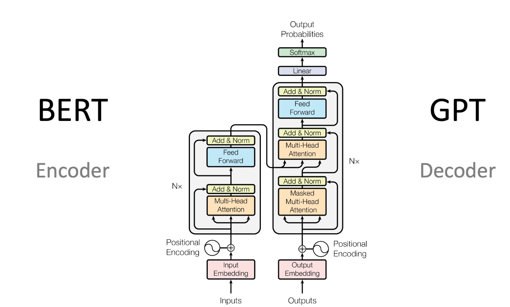

LLMInterview
LLM 面试题
什么是 LLM⭐⭐⭐
LLM（Large Language Model，大语言模型）本质上是一种基于海量文本训练得到的文本生成模型，可以看作是一个规模非常庞大、包含了海量参数的概率函数。
核心工作原理：
和普通函数类似，给定输入经过计算得到输出：我们输入一段文本（Prompt），模型经过内部计算后，输出接下来最可能出现的文本内容。具体流程分为三步：
- Tokenization： 输入的 Prompt 会被按照规则切割成一个个
token，token 可以是一个字、一个词，也可以是词的一部分。 - 自回归生成： 模型并不是一次性生成完整答案，而是逐步预测下一个 token——每次输出下一个 token 的概率分布，根据概率分布采样得到一个 token，然后将这个 token 追加到上下文，重复预测下一个。
- 能力涌现： 通过在大规模语料上训练"预测下一个 token"这个简单目标，当模型规模、训练数据和训练方法达到一定程度后，模型就能涌现出问答、代码生成等多种复杂能力。
传统 NLP 模型和 LLM 有什么区别？ 🚀🚀
传统 NLP 模型是每个任务都要专门训练一个模型，比如翻译，实体识别，词性标注；
而 BERT 时代走通了预训练 + 微调这一流程，通过海量文本数据的训练，可以得到一个预训练的模型，该模型具备通用的语言表示能力，通过适当微调即可快速的适配到不同领域，比起传统 NLP 模型，适配性更强。
但是 BERT 输出的是一个表示而非文本，因此，对于不同的任务，需要在 BERT 的下游接不同的头，比如分类任务就得就一个分类头（通常是全连接层 + softmax），因此，虽然上游做到了统一，但下游还是得去根据不同的任务去设计不同的头。此外，BERT并不擅长生成任务，因为在训练过程中，是通过 MLM 以及 NSP 去训练的，因此，它更擅长的是完形填空 + 判断，而非生成。
综上，BERT 时代走通了预训练 + 微调这一技术路径，但 BERT 并没有做到将 NLP 所有任务统一，真正实现这一成就的，就是后续的 LLM。
Transformer
基本架构
首先，Transformer 的出现是因为传统的 RNN 在面对长序列数据时候，无法很好的步骤长序列的依赖关系，其次，RNN 无法并行计算，训练慢，虽然后续的 LSTM 和 GRU 一定程度上缓解了面对长序列数据是容易出现的梯度消失和梯度爆炸问题，但是它们在捕捉长序列依赖时仍然比较吃力，同时也无法并行计算。
而 Transformer 通过自注意力机制，能够快速的建模序列中任意两个位置的依赖关系，同时还能并行计算！它的整体思路就是每个 token 通过 W_Q, W_K, W_V 线性变化得到查询，键，值向量，之后，用当前 token 对于的查询向量去与整个序列或者序列中部分token对于的键向量做运算，得到注意力分数，然后再去归一化，得到一个概率分布，这个概率分布的含义就是当前位置与其他位置的相关性，概率越好，越需要关注这个位置，之后，用得到的概率分布和所有位置的值向量做运算，就可以得到一个全新的表示，这个表示融合了整个序列的消息。
基本架构就是由编码器和解码器组成，编码器又有输入嵌入层，位置编码，以及若干 编码器层组成，每个编码器层又由两个子层构成，第一个子层连接结构包括一个多头自注意力机制、归一化和残差连接层，第二个子层连接结构包括一个前馈全连接层、归一化和残差连接层。
解码器结构与编码器类似，只不过每个解码器层结构与编码器层略有不同，每个解码器层包含三个子层，其中两个子层一致：多头注意力机制 + 残差，归一化层，第三个子层：包含一个前馈网络 + 残差，归一化层。

为什么需要位置编码？ 🚀🚀
自注意力机制本身是不考虑词的顺序的，如果不加入位置信息，模型会把 "我爱你" 和 "你爱我" 当成相同的序列。也就是说，它只捕捉词与词之间的依赖关系，但不关注词的顺序，所以需要显示的为每个 token 注入位置信息，这就是位置编码。
为什么 self-attention 要除以 d_k 🚀🚀
当 d_k 较大时，Q·K^T 的方差会变大，导致 softmax 输出进入饱和区（梯度极小）。除以 √d_k 可以保持方差为 1，让训练更稳定。
每个 Transformer 块中的 FFN 的作用？
它的结构式两层全连接网络 + 一个激活函数，FNN 可以对每个位置独立的做非线性变换，补充注意力层学不到的信息，因为注意力层本质就是线性加权，FNN 则可以引入非线性。
为什么需要多头注意力？🚀🚀
单组的 \(Q, K, V\) 在进行自注意力计算时，所有的 Token 只能被迫顺应同一种注意力权重的分配。也就是只能捕捉单一维度的关联关系。多头注意力机制就是高维空间划分为多个低维子空间，允许模型在不同的表示子空间中捕捉不同类型的依赖关系。
多头机制通过独立的线性变换矩阵 \(W_i^Q, W_i^K, W_i^V\) 将特征映射到 \(h\) 个不同的子空间。每个“头”独立计算注意力，最后拼接（Concat）起来，每个头可以专注于捕捉不同类型的语言关联，整体上表达能力就更强了。
Encoder-only、Decoder-only、E-D
Encoder-only：只用到了编码器的架构（BERT），每个 token 可以双向的关注序列中的所有其他 token（没有遮掩），这种双向理解能力让 Encoder 非常擅长理解相关的任务，比如文本分类，命名实体识别等等。
Decoder-only（以GPT/Claude/Qwen为代表）：使用因果掩码（Causal Mask），每个token只能关注它前面的token，不能提前看到后面的内容。这种单向设计天然适合文本生成，预训练目标是「预测下一个token」(CLM），目标统一而强大。现在几乎所有大语言模型都是这个架构。
Encoder-Decoder（以T5、BART为代表）：Encoder双向理解输入，Decoder单向生成输出，Decoder通过Cross-Attention读取Encoder的输出。这种架构适合「输入和输出是不同的文本」的任务，比如翻译、摘要、问答。但预训练目标相对复杂，超大规模训练不如Decoder-only简洁。
为什么 Decoder-only 成了主流了？
Decoder-only 架构成为主流主要有以下几个原因：
根本原因是「预测下一个token」这个目标极其统一。所有类型的 NLP 任务（问答、写作、推理、代码生成、翻译）都可以统一表达成「续写」这一件事，不需要区分「这是理解任务」还是「那是生成任务」，一套训练目标搞定一切。
其次，预测下一个 token 这个目标可以直接在海量无标注的文本上做自监督训练，也就是说，数据集收集与构建更加轻松。
最厉害的是，随着训练方式、数据规模、训练轮数等达到一定规模，模型能从预测下一个 token 这个目标上涌现出其他强大的能力，最开始模型只是在学习续写，但由于能力涌现，模型能够进行推理、写代码、问答等等。
简言之：Decoder-only 路径简单、数据易获取、训练推理高效、能统一所有任务，放大模型后效果更好，自然就成为了主流。
什么是 Function Calling⭐⭐⭐
先说两个常见误区：
第一个误区是认为模型能"自己去"联网或执行代码。大模型本质上是纯文本模型，没有任何执行能力。Function Calling 中，模型只是做决策，输出一个结构化的 JSON 工具调用请求，真正执行工具的是外部的宿主程序。
第二个误区是把它和老方案混淆。以前的做法是让模型用自然语言描述要调用的工具，然后用正则或字符串解析来提取参数，这种方式脆弱且不可靠。Function Calling 的关键改进是模型直接输出结构化的 JSON，不需要任何解析，给了工具调用一个统一的标准。
面试可以这样回答：
Function Calling 是让大模型能够调用外部工具的标准协议，核心是模型全程只负责决策调用那些工具，工具由外部宿主程序负责执行 。
第一步，我们需要给模型定义工具（Tools），每个工具的定义就是一个 JSON，它包括工具名、参数类型，以及最重要的 description 字段——模型就是靠这个描述来判断该不该调用这个工具、什么时候调用的。
第二步，用户提问后，模型分析用户意图，决定调用哪个工具，然后返回一个结构化的 tool_call 请求，里面包含工具名和参数。模型通过 finish_reason 字段告诉宿主程序"我需要调用工具"。模型可以同时返回多个 tool_call，宿主程序可以并行执行这些工具。
第三步，宿主程序解析模型的 工具调用 JSON 请求，执行真正的工具调用（比如调 API、查数据库），拿到结果后，把工具返回的结果封装成一条新消息，追加到对话历史里，再次发给模型。
第四步，模型拿到工具执行的结果，基于这个结果生成最终的回答给用户。整个过程形成了一个"用户提问 → 模型决定调工具 → 代码执行 → 模型生成回答"的闭环。
LangChain 代码示例：
from langchain_openai import ChatOpenAI
from langchain_core.tools import tool
# 第一步：定义工具（@tool 装饰器自动解析函数签名生成 JSON Schema）
@tool
def get_weather(city: str) -> str:
"""查询指定城市的实时天气"""
# 实际项目中这里会调天气 API
return f"{city} 当前天气晴朗，25°C"
@tool
def search_database(query: str) -> list:
"""在数据库中搜索相关信息"""
return [{"title": "Python入门", "author": "张三"}]
# 把工具列表传给 LLM
tools = [get_weather, search_database]
llm = ChatOpenAI(model="gpt-4o").bind_tools(tools)
# 第二步：用户提问，模型决定调哪个工具
from langchain_core.messages import HumanMessage
messages = [HumanMessage(content="北京今天天气怎么样？")]
response = llm.invoke(messages)
# 模型返回 tool_calls（包含工具名和参数）
print(response.tool_calls)
# [{'name': 'get_weather', 'args': {'city': '北京'}, 'id': '...'}]
# 第三步：LangChain 自动执行工具（ToolNode）
from langgraph.prebuilt import ToolNode
tool_node = ToolNode(tools)
tool_result = tool_node.invoke({"messages": [response]})
# tool_result 包含了 get_weather("北京") 的执行结果
# 第四步：把工具结果追加到对话历史，模型基于结果生成最终回答
messages.append(response) # 模型的 tool_call 请求
messages.extend(tool_result["messages"]) # 工具执行结果
final_response = llm.invoke(messages)
print(final_response.content)
# "北京今天天气晴朗，气温 25°C。"
实际项目中的简化写法：用 LangGraph 的 create_agent 可以自动完成"调工具 → 拿结果 → 再生成"的循环：
agent = createagent(llm, tools)
# 一步到位，LangGraph 自动处理多轮工具调用
result = agent.invoke({
"messages": [HumanMessage(content="北京今天天气怎么样？顺便帮我查下Python入门的资料")]
})
print(result["messages"][-1].content)
LLM 是如何学会调用外部工具的呢？ ⭐⭐⭐
两阶段训练：
第一阶段是 SFT（有监督微调 -- Supervised Fine-Tuning），解决的是模型"会不会调"的问题。核心思想就是用大量完整的工具调用对话数据做微调，
用户：北京今天天气怎么样？
模型：tool_calls = [{name:xxx, args:{k1:v1, ... }}, {}]
工具：北京今天天气晴朗，25°C
模型：北京今天天气晴朗，气温 25°C。
通过这类数据，主要教会模型三件事：理解工具定义（JSON Schema 里的 name、parameters、description）、学会输出正确的工具调用请求对应的 JSON，同时熟悉工具调用的流程。
但 SFT 只是让模型知道了工具调用相关的流程、理解了工具的定义和明确了工具调用请求的输出格式，但此时模型并不能准确地去调用工具。
而第二阶段是 RLHF（人类反馈强化学习），解决的是模型"该不该调"的问题。
RLHF 的核心流程分三步：
第一步：收集偏好数据。 对于同一个用户问题，让模型生成多种不同的响应（有的调了工具、有的没调、有的调了但参数不对），然后标注员对这些响应做排序，选出最好的。
第二步：训练 Reward Model（奖励模型）。 用上面的排序数据训练一个独立的打分模型，它的输入是"用户问题 + 模型响应"，输出是一个标量分数。这个模型学会了判断：工具选得对不对、参数传得准不准、时机把握得好不好。
第三步：PPO 强化学习优化。 把 SFT 模型和 Reward Model 放在一起，模型每生成一个响应，Reward Model 就给一个分数作为奖励信号，然后用 PPO 算法反过来更新模型的权重，让模型逐渐学会"该调的时候就调、不该调就不调、调了就要调对"。
用户：你好呀
模型：[不调用工具] → "你好！有什么可以帮你的吗？" ← Reward 高分 ✓
用户：今天天气如何
模型：[不调用工具] → "我无法获取实时天气" ← Reward 低分 ✗
模型：[调用 get_weather] → 拿到天气数据 → 回答 ← Reward 高分 ✓
低成本替代方案：RLAIF
RLHF 需要大量人工标注，成本很高。现在流行用 RLAIF（AI 反馈），让更强的模型（比如 GPT-4）代替人来给响应打分、排偏好顺序，效果接近但成本低得多。OpenAI 的 o1 系列工具调用能力就大量用了这种方式。
什么是 MCP，组成部分？⭐⭐⭐
MCP（Model Context Protocol）是 Anthropic 推出的开源协议，它标准化了 AI 应用如何获取外部工具和资源，可以理解为"AI 世界的 USB-C"**——一个接口，插哪儿都行。
核心思想： 以前每个 AI 应用要单独写适配器连接各种数据源，N 个应用 × M 个数据源 = N×M 个适配器。有了 MCP 之后，数据源只要写一个 MCP Server，所有支持 MCP 的应用都能连，变成了 N+M。
组成部分：
1. MCP Host（宿主应用）
就是想要使用 MCP Server 提供工具和数据的 AI 应用，比如 Claude Desktop、IDE（Cursor、Windsurf），或者自己搭建的智能体。它的职责是启动和管理所有 MCP Client。
2. MCP Client（客户端）
Host 内部的一个组件，负责和对应 MCP Server 建立连接、发送请求、接收响应。一个 Host 可以同时连接多个 Client，每个 Client 对应一个 Server。
3. MCP Server（服务端）
提供能力的一方，暴露三样东西给 Host：
- Tools：可执行的函数，比如"查询数据库"、"调天气 API"。模型通过 MCP 协议调用这些工具，类似 Function Calling。
- Resources：上下文数据源，比如文件、文档、数据库记录。模型可以读取这些资源作为上下文，类似于 RAG 的知识库。
- Prompts：可复用的提示词模板，比如"代码审查模板"、"总结文章模板"。
4. Transport（传输层）
Client 和 Server 之间的通信方式，支持两种：
- stdio：本地进程通信，适合本地部署。Host 直接启动 Server 作为子进程，通过标准输入输出交换数据。
- Streamable HTTP：远程通信，Server 作为独立的 HTTP 服务部署，Client 通过网络连接。支持多个 Client 共享同一个 Server（比如团队共享一个数据库 MCP Server）。早期 MCP 用的是 SSE（Server-Sent Events），但 2025 年规范更新已正式废弃 SSE，改用 Streamable HTTP——用单一 HTTP 端点同时处理请求和响应，也可以降级为普通的请求/响应模式，更灵活。
底层都是基于 JSON-RPC 协议。
┌─────────────────────────────────────┐
│ MCP Host │
│ ┌───────────┐ ┌───────────┐ │
│ │ Agent │ │ MCP │ │
│ │ (LLM) │ │ Client │ │
│ └─────┬─────┘ └─────┬─────┘ │
│ │ │ Transport │
│ └────────┬──────┘ │
└─────────────────┼───────────────────┘
│
┌────────┴────────┐
│ MCP Server │
│ ┌─────────────┐ │
│ │ Tools │ │
│ │ Resources │ │
│ │ Prompts │ │
│ └─────────────┘ │
└─────────────────┘
│ └─────────────┘ │
└─────────────────┘
MCP 和 Function Calling 有什么区别？有没有实际跑过 MCP？
MCP 和 Function Calling 不是竞争关系，而是上下游互补关系：
Function Calling 是让模型能够调用外部工具的一个标准化协议。它解决的是模型怎么调用、何时调用工具。
MCP 解决的是一个数据库（qdrant)、一个 API、其他应用（github,langchain官方)等外部服务，怎么以标准化的方式把自己的能力注册成工具，让任何支持 MCP 的 AI 应用都能连上。
简单说：MCP 为 大模型提供工具，Function Calling 则让我们的大模型能够调用工具！
实际跑过 MCP 的两个场景：
第一个场景：给 Claude Code 接 MCP 服务
我本地部署了一个 Web Search 的 MCP Server，通过 streamable_http 协议暴露出去，然后在 Claude Code 的配置里连上这个 Server。这样 Claude Code 就能直接调用网络搜索能力，回答一些需要实时信息的问题。整个配置过程很简单——在 .claude 目录下声明 MCP Server 的 URL 和传输方式就行。
第二个场景：LangChain 通过 langchain-mcp-adapters 调用 MCP
在 LangChain 项目中，通过 langchain-mcp-adapters 库连接 MCP Server，自动发现 Server 暴露的 Tools，转换成 LangChain 的 Tool 对象，然后绑定到 Agent 上。整个过程和用普通 Function Calling 没有任何区别。
from langchain_mcp_adapters.client import MultiServerMCPClient
# 连接本地 MCP Server
async with MultiServerMCPClient({
"search": {
"url": "http://localhost:8000/mcp",
"transport": "streamable_http",
}
}) as client:
# 自动发现 Server 暴露的工具
tools = client.get_tools()
print(tools) # [Tool(name="web_search", ...), ...]
# 绑定到 Agent，正常使用
agent = create_react_agent(llm, tools)
Skills 是什么？⭐⭐⭐
Skill 是可复用的 Agent 能力模块，核心设计思想是渐进式披露——只在需要时才加载完
整内容去提供特定领域的工作流和知识，节省 token。
一个 Skill 包含：
my-skill/
├── SKILL.md # 必填：元数据 + 核心指令（YAML frontmatter + Markdown 正文）
├── scripts/ # 可选：可执行脚本（.py, .sh 等）
├── references/ # 可选：参考文档（API 文档、规范、指南）
└── assets/ # 可选：静态资源（模板、图标、字体）
其中 SKILL.md 是唯一必需的文件，分为两部分：
- YAML frontmatter：包含 name 和 description，启动时加载（约 100 token），用于判断是否需要激活这个 Skill
- Markdown body：详细的工作流程、步骤、输出格式、规则约束等，仅在匹配后才加载（约 500-5000 token）
工作机制是 Match-Read-Execute 三步：匹配 description → 读取 SKILL.md → 按指令执行。与 CLAUDE.md（始终加载的项目规则）和 Tools（始终可用）不同，Skills 是按需加载的专门化工作流。简单说就是："需要时才加载的专家能力包"。
MCP 和 Agent Skill 的区别是什么？⭐⭐⭐
一句话概括：MCP 解决"能做什么"，Skill 解决"怎么做好一件事"。
MCP 解决的是一个数据库（Qdrant）、一个 API、其他应用（GitHub、LangChain 官方）等外部服务，怎么以标准化的方式把自己的能力注册成工具，让任何支持 MCP 的 AI 应用都能连上。它解决的是”模型能用什么“的问题。
Skill 则是教会 Agent 如何合理、高效地完成某一类任务——先做什么、再做什么、遵循什么规则、输出什么格式。它解决的是"怎么把一件事做好"的问题。
简单说：MCP 给模型提供工具，Skill 教模型做事。 它们都能向模型提供一些静态资源。
了解 SSE、WebSocket 吗？⭐⭐⭐
SSE（Server-Sent Events）
本质是对 HTTP 的"巧用"，不是新协议。客户端发一个普通 GET 请求，请求头声明 Accept: text/event-stream，告诉服务端"我想收流式数据"。服务端响应头声明 Content-Type: text/event-stream，然后保持连接不关闭，持续往里追加写入数据。整个过程就是一个普通的 HTTP 连接，只是响应体变成了无限流。
客户端请求头：
GET /events HTTP/1.1
Accept: text/event-stream
服务端响应头：
HTTP/1.1 200 OK
Content-Type: text/event-stream
Connection: keep-alive
SSE 的三个阶段：
- 连接建立 — 客户端发 GET，服务端返回 200 +
text/event-stream，连接保持 - 数据传输 — 服务端不断写入数据，每条消息以
data:开头、\n\n结尾 - 连接关闭 — 服务端完成生成或客户端主动关闭，底层 TCP 连接断开
SSE 自带断线重连机制，客户端的 EventSource API 会在连接断开后自动重试。
典型场景：消息通知、股票行情、大模型流式输出（OpenAI、Anthropic 的流式响应都用 SSE）。
WebSocket
全双工通信协议，通过 HTTP Upgrade 握手后，协议从 HTTP 切换为 ws:// 或 wss://，之后两端可以互相发送消息，不再有请求-响应的概念。支持二进制和文本数据，性能比 SSE 更好，但需要自己处理断线重连。
典型场景：即时聊天、在线游戏、多人协作编辑。
两者对比：
| 维度 | SSE | WebSocket |
|---|---|---|
| 通信方向 | 单向（服务端 → 客户端） | 全双工（双向） |
| 协议 | 标准 HTTP（GET + 响应头声明） | 独立协议（ws/wss） |
| 数据格式 | 纯文本（data: xxx\n\n） |
文本 + 二进制 |
| 断线重连 | 自带 | 需手动实现 |
| 适用场景 | 服务端推送、流式响应 | 实时交互、游戏、协作 |
简单说：只需要服务端往客户端推数据用 SSE，需要双方实时对话用 WebSocket。
什么是护栏技术？🚀
护栏技术是位于大模型（LLM）与用户/外部系统之间的安全过滤层，通过对输入（Prompt）和输出（Response）进行实时监测与干预，确保模型行为符合人类的价值观，避免输出有害的内容。
在模型训练过程中，我们往往会做预训练得到的模型上做偏好对齐操作，让模型的输出更加符合用户的偏好，同时塑造模型的三观，让它不出输出那些违背人类价值观的内容，偏好对齐是对模型的本质改造，而护栏技术是一个“外部围墙”，也是最后一道防线，因为微调不能保证模型100%的不去输出那些不合法等内容。
大模型的结构化输出指的是什么，如何实现？🚀
结构化输出就是让大模型生成符合特定格式的数据，比如 JSON、YAML、XML、表格、MD文件等，而不是一个自由文本，这些特定格式的数据能够被更好的用于下游任务。
这里实现简单介绍一些方法：
1）直接通过提示词工程，来约束大模型的输出格式，这种方式本质上是利用大模型在 SFT 阶段学习到的结构化输出能力。
2）JSON Mode / Schema 约束：提供一个标准的 JSON Schema，底层通过 Grammar-Based Sampling（语法约束采样） 强制模型每一步生成的 Token 都在 Schema 路径内。
什么是 GPT Structured Outputs (结构化输出)
GPT Structured Outputs 是 OpenAI 提供的一种强约束生成技术，它通过在推断层引入 语法约束采样（Grammar-Based Sampling），确保模型生成的 JSON 近乎 100% 符合开发者定义的 JSON Schema。
Agent 面试题
什么是 Agent，和普通 LLM 有什么区别？⭐⭐⭐
Agent 其实就是基于 LLM 构建的一个智能系统，它能够对任务进行推理、决定使用哪些工具，并迭代地朝着解决问题的方向努力。简单说就是：Agent = LLM + 规划 + 工具调用 + 记忆。
| 维度 | LLM | Agent |
|---|---|---|
| 能力边界 | 仅能生成文本，无法与外部交互 | 可调用工具（搜索、数据库、API），与外界进行交互 |
| 知识时效 | 训练截止后无法获取新信息 | 通过工具实时查询，知识动态更新 |
| 任务执行 | 单次响应，被动回答 | 多轮循环（ReAct），主动规划并拆解复杂任务 |
| 记忆能力 | 仅依赖有限的上下文窗口 | 可持久化存储对话历史和任务状态 |
形象一点来说的话，LLM 像是一个博学但闭门不出的教授，知识丰富但只能纸上谈兵；而 Agent Agent 则是给这位教授配上了电脑和手机，让他能实时查资料、做计算、执行操作，从"会说话"真正变成"会做事"。
Agent 的基础架构有那些？
Agent 的基本架构就是 LLM + Planning + Tool Calling + Memory，LLM 是整个系统的大脑，负责理解任务和做任务的推理、决策；工具让 Agent 能跟外部世界交互，赋予了 Agent 网络搜索、查询数据库、执行代码 | shell 命令等能力；Memory 赋予了 Agent 长短期记忆的能力； Planning 负责把复杂目标拆解成可执行的步骤。
Workflow 是什么？与 Agent 的区别？
Workflow 是确定性的流程编排，其实就是程序员预先通过图或者链结构将执行的流程编排好、每一步怎么走都是相对确定的。所以 workflow 是可控的、可追溯的、可调试的。
而 Agent 则是由 LLM 来驱动、决定下一步该如何执行、灵活但不可控。
通常 Workflow 与 Agent 是相结合的：整体用 Workflow 框住主流程，在需要灵活处理的节点嵌入 Agent 能力。
比如一个客服系统，意图识别 → 知识检索 → 回答生成 这条主链路是固定的 Workflow，但"知识检索"这个节点内部可以用 Agent 来动态决定检索几轮、用哪些工具。这样既保证了整体可控，又有局部的灵活性。
Agent 的设计范式有哪些？ ⭐⭐🚀
常见的 Agent 范式主要有 React、Plan-and-Execution、Reflection、Multi-Agent。
1. 什么是 React ？
ReAct（Reasoning + Acting）是最常见的 Agent 范式，核心是 Thought → Action → Observation 循环：LLM 先分析当前局面写下推理过程（Thought），再决定调用哪个工具（Action），Observation 阶段则是接收工具返回的结果，然后回到下一轮 Thought，由 LLM 判断信息是否足够——够了就输出最终答案，不够就继续 Action。
优势：Agent会先想在做、减少了冲动决策的可能性；推理过程可见，出问题方便调试。
短板：属于"走一步看一步"的局部最优模式，处理长程复杂任务时容易在中间迷失方向，忘记最初目标或反复打转。
2. 什么是 Plan-and-Execution
Plan-and-Execution 解决了 ReAct "走一步看一步"容易迷失的问题，它将规划和执行解耦：先由 LLM 做全局规划，把复杂任务拆解成完整执行步骤，再交由执行器逐一完成。成熟的 Plan-and-Execution 实现还包含动态重规划机制——每执行完一步都把结果反馈给规划器，规划器会去动态的判断当前计划是否需要更新，从而保证计划是活的。
优势：解决 ReAct "走一步看一步"容易迷失的问题，有全局视图，复杂任务更可控。
短板：多了规划环节，成本和延迟增加；并且如果初始方向错了，后续难以挽回。
3. 什么是 Reflection
在 ReAct 或 Plan-and-Execute 的基础上加一层质量保障：Agent 完成一步或整个任务后，让另一个 LLM（或同一模型）判断做得好不好、是否符合预期。不通过则重试或换策略。
其变体 Reflexion 更进一步，不只是简单"重做一遍"，而是生成一段"反思总结"作为额外上下文传给下一次尝试，类似"错题本"机制。
4. 如何选择 Agent 范式？
选择范式主要从两个维度考虑：任务复杂度和质量要求
对于一些步骤不多，并且每步相对独立的任务，React 范式就足够了。对于一些长程复杂任务、或者说是不同步骤之间有依赖、需要全局统筹、则选择 Plan-and-Execution如果对输出的质量要求很高，并且允许花更多的时间和成本，则在原有基础上叠加 Reflection 做质量把关。
但是这三者也不是互斥的，它们可以结合来使用：比如用 Plan-and-Execution 做整体规划，每个步骤内部用 ReAct 执行，关键节点再加 Reflection。
复杂任何怎么做任务拆分？ 为什么要拆分？效果如何提升？
首先，先将复杂任务为什么要拆分：LLM 的上下文窗口有上限，任务越大中间状态越多、越容易出错，出错了还得从头开始。而把复杂任务拆开之后每一步可以独立验证和重试，容错率显著提升。
拆分一个复杂任务的方式主要有两种，第一种可以叫静态拆分，其实就是由人提前规划好当前任务的执行步骤。而动态拆分则是把任务拆解交给 LLM 去做，llm 接收到一个比较复杂的任务目标，然后输出一个完成任务的步骤列表。
当然，拆分完任务以后，为了提高执行速度，还要分析每一步之前的依赖关系，这样就可以把能并行的步骤并发执行，从而提升整体的执行效率。
最后，是如何提升任务的拆分效果：
一是自适应拆分——不要在开始就把所有步骤的粒度定死，而是"做不好就继续拆"——先让执行器尝试完成当前任务，做得好就继续走；如果超过了最大步数还没完成、或者输出质量不达标，就把这个任务交还给规划器，进一步拆成更小的子任务。整个过程像一棵递归展开的任务树，只有真正做不好的节点才会被继续拆分，计算开销和实际难度成正比。
二是重规划（Replan）——每执行完一步都把结果反馈给规划器，判断是否偏离预期。如果子任务失败或中途发现新线索，及时修改后续计划，保持计划是活的，而不是"一条错路走到底"。
请你介绍一下 AI Agent 的记忆机制，并说明在实际开发中应该如何设计记忆模块？
AI Agent 的记忆分为短期记忆和长期记忆：
短期记忆 就是 Context Window 里的消息列表，用来维持当前任务的执行状态，但窗口大小有限制，内容太多前面的信息会被截断或压缩。
长期记忆 把重要信息持久化到数据库或向量库中，突破窗口限制，实现跨会话、跨任务的知识保留。比如用户偏好、项目背景啊（claude.md | agent.md）
实际开发中设计记忆模块主要解决三个问题：
存什么：不是所有对话都存，要过滤噪音，只提取对后续任务有价值的内容。
怎么存：需要进行语义检索的内容，适合存入到用向量数据库，方便做相似度检索，对于一些结构化的内容或者无需进行语义检索的内容，如用户偏好、项目背景等更适合关系型数据库或者 k-v 存储，查询速度快。
什么时候取：任务开始前主动检索加载背景上下文，执行中按需去向量数据库检索特定知识。
长短期记忆的作用？⭐⭐⭐
短期记忆：维持当前任务的状态，让 Agent 知道"刚才做了什么、说了什么"，保证本轮对话连贯。
长期记忆：把重要信息持久化到数据库或向量库中，突破窗口限制，实现跨会话、跨任务的知识保留。比如用户偏好、项目背景啊（claude.md | agent.md）
什么是 Multi-Agent？为什么要有它？⭐⭐⭐
Multi-Agent 就是多个专业 Agent 分工协作完成复杂任务。每个 Agent 只负责自己擅长的领域，通过消息传递或共享状态来协同工作。
在复杂任务下，单个 Agent 的上下文窗口是有限的、如果一个 Agent 负责所有步骤，上下文窗口很容易被各种中间状态和无关消息塞满，既不纯净又容易撑爆；而且如果任务涉及完全不同的专业领域，同一个 Agent 被迫加载各领域的提示词和知识，会导致注意力分散、每个任务都做不精。
而多 Agent 架构下，每个 Agent 拥有独立的上下文，只聚焦自己擅长的领域，保证了上下文纯净和专业性。
其次，对于没有依赖关系的多个 Agent 可以并行执行，效率高于单 Agent 串行处理。
补充：这道题如果考虑真正的框架开发（langchain），那么还可以说：如果单个 Agent 配的工具太多，就会导致决策困难，而 Multi-Agent 架构可以给每个 Agent 都配置一些工具，避免了单个 Agent 工具太多。
Multi-Agent 的适用场景？局限性？⭐⭐⭐
Multi-Agent 适用于 Single-Agent 架构无法去很好的处理一些场景：
一是：当前任务太长、信息量太大、context window 就非常容易撑爆、关键信息频繁遗忘；
二是：不同步骤需要完全不同的专业能力，如果把若干专业能力相关的提示词都给同一个 Agent、可能会导致它每件事都做不好；
三则是当前的任务可以拆分为若干独立的子任务，单智能体智能串行执行，但是 Multi-Agent 可以并行执行。
当然，引入 Multi-Agent，不可避免地会使系统变得复杂，变得难以维护，就像是单体项目演变到微服务项目，所以，能够用 Single-Agent 解决的，就不要上 Multi-Agent。
Multi-Agent 的设计方案
现在主流的 Multi-Agent 的设计方案可以分为两种：
第一种是集中式调度（Supervisor），有一个主智能负责任务拆解、路由分发、结果汇总。其他子 Agent 只专注执行主智能体下发的任务。好处是架构清晰、容易管控，LangChain 的 create_deep_agent + agents 属性搭建的多智能体就是这种架构。
第二种则是去中心化，在该模式下没有中央调度，所有 Agent 平级。比如说 LangGraph 的多节点图结构、AutoGen 等。
中心化的问题就在于失控——没人统筹调度，Agent 之间容易做重复工作，Agent的执行顺序也不确定，如果出错了，调式非常困难。
Agent 的记忆压缩方法有哪些？
因为 Agent 的 Context Window 有限，不能无限制往里面塞消息，必须把不重要的内容"减掉"或"浓缩"，保留核心信息。常见的记忆压缩方法主要有四种：
1）滑动窗口：最粗糙的方式，窗口满了就直接丢弃最老的对话记录。简单高效，但会完全丢失历史信息。
2）摘要压缩：对滑动窗口【硬截断】的改进，把早期对话交给模型生成一段精简摘要，用摘要代替原始消息。保留了语义信息，但会丢失细节。
3）重要性过滤：不在从时间维度去考虑丢弃那些消息，而是换了个角度，按内容的实际价值来决定去留，具体做法是给每条消息打一个重要性分数，后续优先保留有价值的内容，丢弃无意义或不重要的内容，当然，这里的丢弃也可以换成摘要压缩。
4）结构化抽取：前三种方式都有一个共同的前提假设：历史消息最好以对话文本的形式保留。但结构化抽取的思路完全不同，它提出了一个非常深刻的问题：我们真的需要保留对话文本本身吗？在一些场景下，其实对话本身反而没有那麽重要，比如说张三的一段自我介绍，那么重要的很可能就是张三的姓名，年龄、爱好这写结构化的数据，因此，我们根本没必要将整段介绍作为对话消息保存到 context window，我们只需要将提取出来的结构化数据保存下来，就能达到相同的效果。
什么是 Prompt Caching
LLM 每次处理请求，都要把输入的所有 token 过一遍模型做计算（prefill），这是延迟和成本的主要来源。对于有固定 system prompt + 越来越长的历史对话，每次调用模型这部分内容都会被重新算一遍，即使和上次完全一样。
Prompt Caching 就是把这些 prompt 前缀部分的计算结果缓存起来，下次请求的 prompt 如果前缀匹配，则直接复用缓存，不重新计算。
如何赋予 LLM 规划能力？ ⭐⭐⭐
LLM 本身是自回归的 token 生成器，不具备真正的"规划"能力。赋予它规划能力的核心思路是通过提示词工程，引导模型把思考过程显式地展开。从简单到复杂，有三种主流方案：
1. CoT（Chain of Thought，思维链）
是什么：让 LLM 把推理步骤写出来，一步步推导到答案。而不是直接生成答案。
怎么做：最简单的方式就是在 prompt 里加一句 "请一步步思考"（Let's think step by step），LLM 就会自动把推理过程展示出来。
为什么有效：LLM 的输出是自回归生成的，一个 token 接着一个 token 往下写。当它先写出第一步推理，这个推理内容就会进入上下文，成为生成下一个 token 的依据。
类比一下，就像纸上演算数学题：心算容易跳步出错，把每一步写下来，步骤清晰、出错率就低了。
优势：实现成本最低，改个 prompt 就行，是工业标准做法。
局限：只有一条推理路径，如果一开始方向都选错了，那么整条推理链就会歪，没有任何的纠错机制。
2. ToT（Tree of Thought，思维树）
是什么：在 CoT 线性推理的基础上，让模型同时探索多条推理路径，边探索边剪枝，最终选出最优路径。
怎么做：每生成一步，不是只选一个方向，而是生成多个候选步骤（比如 3 个），对每个候选评估哪个更好，选最优的继续往下展开，形成一棵推理树。类似深度优先搜索 + 剪枝。
为什么有效：CoT 一条路走到底，错了就全盘崩溃。ToT 允许"试错"，错了可以回溯换一条分支。
劣势：调用次数是 CoT 的 3~5 倍，API 成本和延迟都显著增加。
适用场景：数学证明、编程题、创意写作等需要多方案比较的场景。
3. GoT（Graph of Thought，思维图）
是什么：推理节点不再是单纯的树形展开，而是一个有向图，节点之间可以分叉，也可以合并。
怎么做：和 ToT 的区别在于多了"合并"操作。比如从两个不同思路分别推理出两个中间结论，GoT 可以把它们合并成一个更强的结论继续推理：
为什么有效：复杂问题往往需要多角度的子推理结果综合才能解决。树只能选一条路，图可以"多管齐下再汇总"。
劣势：图结构的节点管理、依赖关系追踪、合并策略都比较复杂，实现成本高。
适用场景：学术论文写作、复杂系统设计、需要综合多个独立分析结论的场景。
三者对比
| CoT | ToT | GoT | |
|---|---|---|---|
| 结构 | 一条线 | 一棵树 | 一张图 |
| 核心优势 | 简单有效 | 可回溯试错 | 可综合多源信息 |
| 实现成本 | 最低 | 中 | 高 |
| 工业落地 | ✅ 最常用 | ⚠️ 有一定应用 | ❌ 偏学术 |
一句话概括：CoT 解决"不跳步"，ToT 解决"不走错路"，GoT 解决"不遗漏角度"。
什么是 A2A 协议，原理是什么？ ⭐⭐
“A2A 协议是多个智能体之间通信的协议，它标准化了智能体之间的消息传递和协作方式。简单来说，A2A 协议就是智能体世界的“微服务通信协议”。
A2A 的基本架构可以类比为传统后端的微服务架构，在 A2A 的视角下，每个 Agent 不在是封闭的了，而是一个标准的，可以独立部署的 http 服务。
在 Agent 互相的交互中，每个 Agent 需要知道其他 Agent 能干什么，有什么能力，而 Agent Card 就是解决了这个问题，它通常是一个 JSON 文件，详细介绍了这个 Agent 叫什么，能干什么，支不支持流式，异步调用等。
在 Agent 的任务协作中，基本单位是 Task，调度 agent 去委派一个任务给其他 agent，本质上就是创建一个 task，然后交给执行方，在这个过程中，task 是有生命周期的，比如已提交，执行中，完成或失败。
总结：“A2A 协议是多智能体协作的标准，核心是每个 Agent 通过 Agent Card 声明自己的能力（Skills），调度 Agent 负责任务分发和结果收集。任务是异步的，生命周期从提交到执行再到完成或失败。整个架构类似微服务，每个 Agent 独立、可插拔，支持长时间任务和异步协作，降低系统耦合并便于扩展。”
了解什么是 Prompt Engineering 吗？🚀🚀
Prompt Engineering（提示词工程） 是指通过精心设计和优化输入文本（Prompt），引导大语言模型生成高质量、符合预期的输出的一门工程学科。它是目前人与大模型交互最基础也最核心的手段。
一句话：LLM 像一个「万能实习生」，能力极强但需要清晰的指令。Prompt Engineer 就是那位写出高质量「工作指令」的人。
为什么需要 Prompt Engineering？
LLM 本质上是基于概率的文本生成模型，同样的输入可能产生不同的输出。Prompt Engineering 要解决的核心问题包括：
- 控制输出质量：减少"胡说八道"（幻觉 / Hallucination）
- 约束输出格式：要求输出 JSON、表格、代码等结构化内容
- 激活特定能力：引导模型调用其训练中学到的特定知识
- 降低使用成本：一次写对 Prompt，减少反复调用的 token 消耗
常见 Prompt 技巧
以下是面试中最高频被问到的 Prompt 技巧，按实用程度排序：
在 Prompt 中提供少量输入-输出示例，让模型"照猫画虎"。这是最常用也最有效的基础技巧。
- 关键：示例质量 > 数量。2-5 个高质量示例通常已经足够
- 适用：分类、格式化、风格模仿等任务
给模型设定一个特定的角色身份，利用角色约定来约束语言风格、知识范围和回答角度。
- 原理：模型在训练数据中见过大量"角色-对话"配对，角色设定能激活对应分布
- 变体：可以叠加多个角色限制，如"你是一位严谨的数学教授，同时也是一个 5 岁孩子的妈妈，请用简单易懂的方式解释什么是概率"
引导模型一步一步思考（Let's think step by step），而不是直接给出答案。由 Wei et al. (2022) 提出。
问题：一个篮子里有 5 个苹果，小红拿走 2 个，小明又放进来 3 个，现在篮子里有几个苹果？
让我们一步一步思考：
1. 一开始有 5 个苹果
2. 小红拿走 2 个：5 - 2 = 3
3. 小明放进来 3 个：3 + 3 = 6
所以答案是：6
- 适用：数学推理、逻辑推理、多步决策
- 变体 - Zero-shot CoT：直接在 Prompt 末尾加一句 "Let's think step by step" 即可生效，无需示例
| 技巧 | 复杂度 | 效果 | 适用场景 |
|---|---|---|---|
| Zero-shot | 🌱 低 | ⭐⭐ | 简单任务，快速验证 |
| Few-shot | 📋 中 | ⭐⭐⭐⭐ | 分类、格式化、风格模仿 |
| Role Prompting | 🎭 低 | ⭐⭐⭐ | 风格约束、知识范围限定 |
| CoT | 🧮 中 | ⭐⭐⭐⭐⭐ | 数学、推理、复杂决策 |
进阶 Prompt 框架
面试加分项
如果你能说出下面这些进阶框架，面试官会认为你对 Prompt Engineering 有深入理解。
由 Yao et al. (2023) 提出，将推理（Reasoning）与行动（Acting）交替进行。模型在思考的同时可以调用外部工具（搜索、计算器等），再将工具返回的结果纳入推理。
典型循环：
Thought: 我需要知道今年的 GDP 数据...
Action: search("2025 年中国 GDP")
Observation: 2025 年中国 GDP 为 135 万亿元
Thought: 基于这个数据，我再来分析...
- 适用：需要检索外部信息的复杂问答
- 工业应用：所有现代 Agent 框架（LangChain、AutoGen 等）都基于 ReAct
对同一个问题，多次调用 LLM（每次带一点随机性），收集多个回答，然后投票选择最一致的答案。由 Wang et al. (2022) 提出。
- 效果：可显著提升数学和推理任务的准确率（CoT + Self-Consistency 几乎是当前最强基础方案）
- 代价：增加 N 倍的 token 消耗
实战最佳实践
注意
下面是无序列表前的一段文字，故意加空行以确保 mkdocs 能正常渲染列表。
- 使用分隔符：用 ```,---,=== 等将指令与输入分隔开，减少歧义
- 明确输出格式：指定 JSON、Markdown、XML 等格式。需要 JSON 时，可以提供一个 JSON Schema
- 负向提示（Negative Prompt）：明确告诉模型"不要做什么"，如"不要解释，只输出代码"
- 迭代优化：没有一次写成的完美 Prompt，先跑通再逐步优化
- 控制温度（Temperature）：事实类任务设低温度（0~0.3），创意类任务设高温度（0.7~1.0）
- System Prompt 与 User Prompt 分离：System Prompt 放角色设定和全局规则，User Prompt 放具体任务
经典 System Prompt 模板
了解 Context Engineering 吗？ 🚀🚀
Context Engineering 是为 LLM/Agent 动态构建、管理和优化上下文的工程体系，目标是在有限的窗口大小内，让模型获得最有价值的信息，从而提升后续推理、工具调用和任务执行效果。
为什么 Context Engineering 变得越来越重要？
数据来源
据 Gartner 2025 年 7 月 报告，Context Engineering 已被宣布为比 Prompt Engineering 更重要的 AI 工程方向。调查显示 约 80% 的企业 AI 失败案例根源在上下文层，而非模型本身。
传统 Prompt Engineering 的核心局限在于：当任务复杂度上升，Prompt 中需要注入的知识量远超简单指令时，"怎么说"已经不够了，关键是"给什么"。Context Engineering 正是在这个背景下应运而生。
Context Engineering 的三大核心维度
Context Engineering 可以拆解为三个递进的能力层次：
核心问题：如何从海量信息中精准找到当前任务需要的上下文？
RAG（Retrieval-Augmented Generation） 是最基础也最核心的技术。其工作流程：
- Chunking 策略：文档切块大小直接影响检索质量。常见策略有固定大小切块（Fixed-size）、语义切块（Semantic Chunking）、递归切块（Recursive Chunking）
- Embedding 模型选择：决定了"语义相似度"的准确程度
- Reranking：对初步检索结果进行二次排序，把最相关的内容排在前面，防止"长尾噪声"污染上下文
- Hybrid Search：结合向量检索（语义）与关键词检索（BM25），互补短板
核心问题：如何组织上下文，让模型最高效地理解和利用信息？
LLM 的注意力机制存在 Primacy Effect（首因效应） 和 Recency Effect（近因效应）——对开头和结尾的内容更敏感，中间部分容易被"遗忘"。因此上下文的摆放顺序和结构化程度直接影响输出质量。
常见结构技巧：
- XML/标记结构：用 XML 标签将不同类型的上下文分隔开，如
<system>、<context>、<history>、<user_query> - 分层注入：最相关的上下文放在最靠近 Query 的位置
- 上下文消歧：显式标记"这是事实"、"这是推测"、"这是用户输入"
核心问题：当信息量超过上下文窗口时，如何保留最关键的内容？
- Context Window（上下文窗口）：模型单次能处理的最大 token 数。GPT-4 为 128K，Claude 3.5 为 200K
- Primacy/Recency 效应：上下文窗口中间部分的信息最容易被模型"忽略"
- Token Budget（Token 预算）：为上下文的不同部分分配预算，如 System Prompt 占 10%，知识库占 60%，对话历史占 30%
常见压缩策略：
| 策略 | 原理 | 适用场景 |
|---|---|---|
| LLM 摘要 | 用 LLM 将长文本压缩为摘要 | 长文档对话 |
| 滑动窗口 | 只保留最近的 N 轮对话历史 | 多轮对话 |
| 关键信息提取 | 只提取与 Query 相关的片段 | QA 系统 |
| 分层摘要（Map-Reduce） | 先分段摘要，再汇总摘要 | 超长文档分析 |
| 自适应 Token 分配 | 根据任务动态调整各部分占比 | 复杂工作流 |
Context Engineering 的典型演进路线
AI 工程化的三层演进（2022 → 2026）
| 时代 | 焦点 | 代表技术 | 核心能力 |
|---|---|---|---|
| Prompt Engineering (2022–2024) | 如何措辞 | CoT, Few-shot, Role | 语言表达能力 |
| Context Engineering (2025–至今) | 给什么信息 | RAG, Memory, Context Compression | 信息检索与组织能力 |
| Harness Engineering (2026–未来) | 全流程控制 | 分层规划、闭环验证、状态管理 | 系统工程能力 |
关于 Harness Engineering 的具体内容，见下文 [[interview/python/大模型面试题#了解 Agent Engineering 和 Harness Engineering 吗 🚀🚀]]。
了解 Agent Engineering 和 Harness Engineering 吗？ 🚀🚀
Agent Engineering 是通过提示词工程、工具调用以及记忆机制等构建具备自主决策能力的智能体系统；
Harness Engineering 是指围绕 AI Agent（特别是 Coding Agent）设计和构建的约束机制、反馈回路与工作流控制系统；它解决的核心问题是：当 AI Agent 拥有了强大的代码生成能力后，如何确保其输出的可靠性、一致性和长期可维护性。
"Harness"本意是马具——缰绳、鞍具那一套东西，把马的力气引到正确方向上。拿来类比 AI Agent 非常合适：LLM 就像一匹蛮力十足但方向感不太行的马，跑得快但容易跑偏.
为什么需要 Harness 呢？ 解决 Agent 的四大原罪🚀🚀
- 痛点：Agent 试图一次完成 1000 行代码，导致上下文耗尽，留下半成品。
- Harness 方案：分层规划 + 状态检查点。强制将任务拆解为 200+ 个微小 Feature，每个 Feature 独立验证。
- 痛点：代码写完未测即宣布完成，导致“看起来能跑，一用就崩”。
- Harness 方案：闭环验证 (Closed-loop Verification)。提供 Puppeteer 或 E2E 测试工具，Agent 必须通过断言才能更新进度状态。
- 痛点：随着会话增长，冗余信息污染上下文，Agent 变得越来越笨。
- Harness 方案：垃圾回收 (GC) Agent。后台自动运行 Agent 扫描并清理不一致的文档与冗余实现，对抗系统熵增。
- 痛点：Agent 对进度无感知，会在一个测试死循环里空转 Token。
- Harness 方案：确定性子采样测试。限制单次会话的运行边界，通过外部 Harness 控制测试覆盖率和执行时长。
AGENTS.md 是“活”的？
它是 Agent 的错误日志。每当 Agent 犯错，人类通过更新该文件建立新的“缰绳”规则。文档不再是静态陈述，而是不断进化的。
OpenClaw 是什么？ 🚀🚀
OpenClaw 本质上是一个开源的多渠道 AI 网关（Multi-channel AI Gateway），它不生产智能，而是通过 Agentic Loop（智能体循环） 机制，将 LLM 的推理能力转化为对操作系统、软件 API 及硬件设备的实际控制权。
OpenClaw 原理？ 🚀🚀
理解 OpenClaw 主要从两个方面：架构和运行时机制。它的架构主要网关层和运行时层。其中，网关层主要负责多平台接入，会话隔离，Cron 定时调度，记忆刷盘等，而运行时层则是真正干活的地方，它接收来着网关层派发的消息，去组装上下文，调用 LLM，执行工具，返回结果。
运行时的核心机制就是一个基于 React 的 Agent loop。
CC 的记忆机制你了解吗？简单介绍一些？
Claude Code 的记忆体系设计得非常务实——没有用向量检索（RAG），而是基于本地文件存储 + LLM 语义判断来实现的。按时间维度分三个层次：
第一层：启动配置层（CLAUDE.md / Rules）
相当于给 CC 准备的"入职手册"，每次会话启动时自动加载到 system_prompt 中。
- CLAUDE.md：放在项目根目录，记录项目的技术栈、架构约定、代码规范
.claude/rules/：可按场景拆分多个规则文件（如testing.md、deploy.md）- 支持全局（
~/.claude/）和本地（项目级）两种作用域
定位：静态、显式、人为维护。适合团队共享的规范和个人固化的偏好（如"始终用 bun 而不是 npm"）。
第二层：跨会话持久化记忆（Memory System）
这是 CC 真正能跨对话"记住你"的核心机制。当你告诉它"记住这个项目用 conda 环境"，它会写入本地文件，下次启动时自动加载。
存储架构：
~/.claude/projects/{sha256(cwd)[:12]}/memory/
├── MEMORY.md # 索引文件，上限 200 行
├── user_role.md # 用户画像：数据科学家
├── feedback_no_mock.md # 行为反馈：不要 mock 数据库
└── project_deadline.md # 项目信息：周四合并冻结
- 用 SHA-256 而不是
hash()生成路径——因为 Python 3.3 后hash()有进程随机化，重启后找不到原目录 - 索引和内容分离：
MEMORY.md是目录，*.md是具体条目（含 YAML frontmatter）
注入时机：
REPL[^1] 启动时 _build_system() 读取 MEMORY.md，将所有记忆条目完整地注入 system_prompt 的第 10 段。模型在对话中自行判断哪些记忆相关，不是由外部 LLM 预筛选的。
关键边界：当前会话自动提取的新记忆要到下次启动才生效。定位是跨会话通道，不是实时同步。
四种记忆类型：
| 类型 | 含义 | 例子 | 何时使用 |
|---|---|---|---|
user |
用户角色、领域知识 | "用户是后端工程师" | 调整回答的角度和深度，让 CC 知道该用什么语气/领域粒度回应 |
feedback |
纠正/行为规范 | "不要 mock 数据库" | 防止重复犯错，之前踩过的坑写下来，下次 CC 就不会再犯同类错误 |
project |
工作进展、截止日期 | "周四代码冻结" | 时效性上下文，写入时尽量用绝对日期（如 2026-06-04）而非相对日期，因为 .md 文件跨会话持久化，相对日期几周后就失效了 |
reference |
外部系统链接 | "bug 在 Linear 追踪" | 指向外部信息源，提示 CC 去对应系统查，而不是凭空猜测 |
这四种分类不只是标签——它们对应了不同的"何时使用"逻辑：
user调语气，feedback纠行为，project管时效，reference指方向。各司其职。
两条写入路径：
- 显式写入： 用户说"记住这个"，模型直接用 Write 工具写文件。即时生效
- 隐式写入： 每轮结束后台异步提取（
_bg_extract，fire-and-forget，不阻塞 REPL），用低配模型（max_tokens=1024）自动从对话中提取值得保存的信息
并发控制（Coalescing）：
用户快速连续输入时，ExtractionCoordinator 用 Coalescing（合并）策略防冲突——已有提取在进行时，只标记"有新消息"，等当前提取完成后再启动下一轮。比 Debounce 更好，因为保证最终状态一定被处理，不会丢弃任何消息。
第三层：会话内短期记忆（Session Memory & Compaction）
解决单次长对话中上下文窗口有限的问题：
- Compact（上下文压缩）： 当对话快要超出上下文上限时，自动将早期对话压缩为摘要，释放 token 空间给后续对话
- Session Memory（后台笔记）： 对话过程中 CC 在后台维护一份高密度"工作笔记"，触发压缩时优先利用它恢复上下文，保证连贯性
与 Memory 的区别： Compact 是短期保活、有损压缩，会话结束后随 transcript 归档。Memory 是永久保存、跨会话复用。前者丢弃"怎么修 bug 的过程"，后者保留"用户偏好方案 A 而非 B 的决策"。
记忆的信任策略：
CC 对自己的记忆持悲观信任态度——记忆指引文件路径时，先用 Read/Glob 验证文件是否存在；提到函数名时，先用 Grep 确认。如果记忆与当前事实冲突，以当前事实为准，并更新或删除过时条目。
简言之：Session 是日志，回答"上次聊到哪了"；Memory 是笔记，回答"哪些信息值得带到下次对话"。两者完全分离。
参考来源： Claude Code 源码（
cc/memory/模块），原文「Claude Code Memory 机制深度拆解」
[^1]: REPL（Read-Eval-Print Loop）：读取-求值-输出循环，指 CC 在终端中持续运行的交互式对话循环。每次用户输入 → 模型处理 → 输出结果 → 等待下一轮输入，如此循环。
Rag 面试题
什么是 Rag？ ⭐⭐⭐
RAG （Retrieval-Augmented Generation），就是检索增强生成。其实就是给大模型配一个"实时更新的外部知识库" ，在生成答案之前，先去外部知识库里检索相关内容，然后把检索结果和用户的问题一起交给 LLM，让它基于这些上下文来回答。
它解决的核心问题有两个：
一是知识冻结问题，LLM 的知识在训练完成之后就固定了，涉及到私有数据或者最新的信息它就答不上来。而通过 Rag，可以随时把私有文档、实时数据注入到上下文中，让模型无需重新训练就能掌握新知识。
二是幻觉问题，LLM 遇到不知道的东西会"一本正经地胡说八道"。RAG 通过提供检索到的真实上下文，让模型有据可依，并在 prompt 中约束"仅基于检索内容作答"，大幅降低幻觉率。
什么是 Advanced RAG? 🚀
Advanced RAG 是在 Naive RAG（检索-合成）的基础上，通过对检索前、检索中以及检索后进行优化，来解决检索不到，检索不准等问题的一种增强架构。
什么是 Mudular Rag 🚀
Modular RAG 就是把传统 RAG 系统拆成一系列相对独立的功能模块，每个模块各干各的事，由一个统一的编排器负责调度和路由，这样整体系统更加灵活、可插拔、好维护与拓展。
比如说：索引模块主要分则对文档进行切分，检索前处理就是对用户提问进行改写，或者进行 HYDE，子查询拓展等，查询模块则：进行多路召回等
Rag 的标准流程 ⭐⭐⭐
一套完整的 Rag 系统分为在线和离线两个阶段。
离线阶段所做的其实就是把各种各样的知识文档加载为 document，然后对 document 进行切片、向量化，然后存储到向量数据库中。
在线阶段简单来说，其实就是根据用户的提问、去向量数据库查询相关的文档片段，然后将检索到的内容与用户原始提问一并提交给 LLM，让它去生成答案
稠密向量、稀疏向量是什么？
稠密向量（Dense Vector） 是由 embedding 模型（如 BGE、text-embedding-ada）将整段文本压缩成的固定维度的连续浮点数数组（如 768 维）。它的优势是语义理解能力强，比如"苹果"和"水果"在向量空间中距离很近，即使字面没有重叠也能召回。缺点是精确的关键词匹配差，比如搜索产品型号"RTX 4090"可能召回不到精确结果。
稀疏向量（Sparse Vector） 是基于词频统计的，维度等于词表大小，但绝大部分位置为 0，只有实际出现的词对应的位置有非零权重（如 BM25 / TF-I DF）。它的优势是精确关键词匹配强，搜"RTX 4090"就能精准命中包含这个词的文档。缺点是无法理解语义，"苹果"搜不到"水果"。
工业上的最佳实践是两者结合做混合检索：稠密向量负责语义召回，稀疏向量负责关键词召回。
向量检索和关键字检索的区别⭐⭐⭐
向量检索是通过 Embedding 模型把文本转成稠密向量，然后计算向量之间的相似度（余弦相似度、内积等）来找到语义上最相近的若干向量。它的核心优势是能理解语义，比如搜"汽车"能匹配到"轿车"、"车辆"这些字面不同但意思相近的词。但缺点是对精确的关键词匹配不够敏感，搜"iPhone 15 Pro"可能搜出"苹果手机"而不是精确的型号。
关键字检索是通过词表匹配来找包含尽可能多的相同词汇的文档，比如传统的 BM25、TF-IDF。它的核心优势是精确匹配能力强，搜什么词就命中包含这个词的文档，不会跑偏。但缺点是无法理解语义，搜"汽车"匹配不到"轿车"，搜"感冒"匹配不到"发烧"。
两者是互补关系，实际生产中通常结合使用：向量检索负责兜底召回语义相关的内容，关键字检索负责进行精确的关键字匹配，召回包含关键字的内容，最后将这两路召回的内如通过 Rerank 模型融合排序。
TF-IDF 和 BM25算法是什么？简单介绍一下
TF-IDF 和 BM25 都是用于衡量文档和查询之间相关性的算法，属于传统信息检索领域，也是关键字检索的核心算法。
TF-IDF（词频-逆文档频率）
TF-IDF 由两部分组成。TF（Term Frequency）是词频，表示一个词在文档中出现的次数，词出现越多次说明当前关键字这个文档越相关。IDF（Inverse Document Frequency）是逆文档频率，表示一个词在整个文档集合中的稀有程度，如果一个词在很多文档中都出现（比如"的"、"是"），它的 IDF 值就低，说明区分能力弱。两者相乘就是 TF-IDF 分数：一个词在当前文档中出现频繁，但在其他文档中很少见，它的权重就高。
BM25（Best Matching 25）
BM25 是 TF-IDF 的改进版，也是目前 Elasticsearch 等搜索引擎默认的相关性打分算法。它在 TF-IDF 的基础上做了三个优化：
第一是对词频做了饱和处理。TF-IDF 中词频越高分数就无限增长，但 BM25 认为一个词出现 10 次和出现 100 次，相关性差异没那么大，所以用了一个饱和函数，词频达到一定阈值后分数增长就放缓了。
第二是考虑了文档长度。长文档天然包含更多词，TF-IDF 对长文档不公平。BM25 会根据文档长度做归一化，长文档的词频会被适当惩罚，短文档的词频会被适当奖励。
第三是自动过滤停用词。BM25 的 IDF 公式中，如果一个词在超过一半的文档中都出现过，IDF 值会是负数，BM25 会把它截断为 0。这意味着"的"、"是"、"我"这种几乎无处不在的停用词，它们的相关性贡献被清零，不会被算进分数。
简单说，BM25 就是更聪明的 TF-IDF，解决了词频饱和和文档长度的问题，所以实际效果更好。
向量归一化是什么？有什么用
归一化就是把向量缩放到固定长度（通常是单位长度）。 具体来说，L2 归一化就是用向量除以它的模（欧几里得范数）：
它的作用主要有两个：
-
统一度量标准。 归一化后，向量的长度差异被消除，只剩下方向信息。这时候内积（dot product）就等价于余弦相似度——cos(θ) = A·B / (||A||·||B||)，当两个向量都归一化后 ||A|| = ||B|| = 1，所以 A·B = cos(θ)。这样检索时直接用内积计算相似度就行，计算效率和余弦相似度一样，但内积是数据库原生支持的操作。
-
消除文本长度偏差。 不同长度的文本生成的向量，其模长可能差异很大。比如一段很长的文档和一段很短的 query，如果不归一化，长文本的向量模长大，内积值天然偏高，会造成检索偏差。归一化后，无论文本多长，都在同一个尺度上比较语义方向。
回到我们系统的实际场景： Milvus 向量数据库的 IP（Inner Product）内积索引是性能最优的检索方式，但前提是向量必须归一化。BGE-M3 模型原生支持 L2 归一化，我们在初始化时直接开启 normalize_embeddings=True，模型在推理时就会自动输出归一化后的向量，省去了后处理步骤，性能更好，结果也更精确。
相比直接微调 LLM，RAG 解决了什么问题？微调和 RAG 各自的优劣势是什么？ ⭐⭐⭐
首先要从本质上区分两者：
微调 本质上就是在原有模型基础上进一步训练，修改模型权重，从而让模型真正的学会新知识，或者说是在某些特定领域或特定任务上表现得更好；RAG不会改变模型权重，而是在模型推理时实时注入最新知识，让模型能够参考最新知识回答问题。
各自解决的核心问题
微调能够提高模型在特定领域或任务上的专业能力，或者改变模型的输出风格，比如现在大模型的 Function Call 就是通过微调实现的，微调让大模型真正的理解了每个工具的定义（Json Schema）以及如何调用工具（输出一个特定的 Json Schema），因此当我们想要去改变模型的输出风格、格式，或者想让大模型真正理解，学习到一些东西，就上微调。
RAG 则能够给大模型提供模型训练时没见过的、或随时变化的外部知识。
优劣势对比
先看微调的优势：它可以塑造模型的输出风格、语气和专业度，这是 RAG 做不到的。而且微调后知识内化到权重里，不会受上下文窗口限制。
但微调的劣势也很明显：每次知识更新都要重新训练，周期长、成本高；而且微调后的模型仍然可能"凭记忆"编造事实、出现幻觉，并且通过微调学习的知识无法溯源。
再看RAG 的优势：相对于微调，成本更低，并且更新文档即可实时生效，不需要重新训练；每个答案都能追溯到具体文档片段，可溯源；通过检索约束，幻觉率更低；长尾知识只要有文档就能召回，不依赖模型记忆；成本也只是推理时多一次向量检索，远低于 GPU 训练。
RAG 的劣势在于：受限于检索到的 Top-K 片段大小，注入的知识量有上限；而且只能提供信息，无法改变模型的"说话方式"。同时，召回率直接影响了模型的回答质量。
两者不是互斥的，而是互补关系。
工业界的最佳实践是微调 + RAG 组合使用：先用微调让模型掌握"领域风格 + 基础专业能力"，再用 RAG 给它配上"实时知识库"。比如一个医疗场景下的应用，微调让模型学会医学专业的表达方式和术语，RAG 则负责提供最新的诊疗指南和患者病历。
Rag 中的文档怎么存的？为什么要对文档进行切割？
Rag 中的文档都是通过 Embedding 模型向量化后存储到向量数据库中的。但通常要对文档切片后再去向量化、存储。
对文档进行切片主要有两个原因：
一是 Embedding 模型有输入长度限制。常见的 BGE、Qwen3-Embedding 最大输入是 8192 tokens，一本几万字的长文档根本塞不进去。
二是把整篇长文档压缩成一个向量，语义信息会被稀释，检索时很难匹配到精确的知识片段，导致召回精度很差。
所以对文档进行切割是提高召回率非常重要的一个手段。
Rag 中文档的切分策略有哪些？⭐⭐⭐
1. 固定大小切分（Fixed-Size Chunking）
最基础的方式，按固定 token 数切分，比如每块 512 -- 1500 个 token，相邻两块保留一定重叠（比如 50 个 token），防止上下文在边界处断裂。
优点：实现简单，是通用兜底方案。缺点：不考虑语义边界，可能把一句话或一个完整的段落从中间切断。
2. 按语义边界切分
但本质上是伪语义切分，它的核心思想就是按一组分隔符依次尝试分割：\n\n（段落）→ \n（换行）→ 空格 → 单个字符（句号..）。比如 LangChain 的 RecursiveCharacterTextSplitter。
核心原则是：在自然断点处切，尽量保持每个 chunk 的语义完整性。但它并不真正理解语义，只是在格式层面找断点。
真正的语义切分的思路是用 embedding 计算相邻句子的相似度，在相似度骤降处切一刀，能精准识别语义转折，但需要额外调用 embedding 模型。
3. 父子文档切分（Parent-Child Chunking）
把文档切成小块（子文档）用于向量化和索引，但检索召回时，取回子文档所属的大块（父文档）作为上下文提供给 LLM。
解决的问题是：小块有利于精确匹配，召回命中率高；但小块上下文不足，LLM 拿到的信息太零碎。父文档则补全了上下文。
4. 特殊格式处理
对于代码文件，按函数、类、模块级别切分，而不是按行数暴力截断，保证每个 chunk 是一段完整可理解的代码块。
对于表格，需要保留表头信息，按行或按逻辑区域切分，避免把一行数据拆到两个 chunk 中。
怎么避免语义被切割掉的问题？⭐⭐⭐
首先得说清楚问题在哪：当检索到一个 chunk 交给 LLM 时，它是被单独抽出来的，很有失去了上下文环境，导致语义断裂。比如一篇技术文档中提到了 "Redis 的性能远超 MySQL"，但单独看这句话，不知道为什么远超、在什么场景下远超。所以模型根本无法通过碎裂的知识片段来很好的生成答案。
解决思路可以从两个方向入手：
一是"切得巧妙"，核心是在切的时候尽量减少语义断裂：使用语义边界切割尽量在自然断点处切，优先段落、再句子，不在一句话中间断掉。
二是"切后补上下文"，核心是在检索到 chunk 后，给它补上周围的环境：
句子窗口检索（Sentence Window Retrieval）：切的时候只切单个句子，但检索到这个句子后，把前后各取 N 句作为窗口一起提交给 LLM，用小 chunk 精确匹配，用大窗口提供上下文。
父子文档切割：小块用于检索匹配，召回时取回大块（父文档）作为上下文。
假设性问题切割（Hypothetical Question Chunking）：为每个 chunk 生成一个"假设性问题"，把问题也存进向量库。因为用户提问的风格和文档写作的风格差异很大，用假设性问题做 embedding 能更好地与用户的真实提问匹配。
上下文召回（Contextual Retrieval）：在原始 chunk 前面自动补充一段简短的背景说明，解释这个 chunk 在原文中的上下文关系。这种方案是在向量化之前就把chunk缺失的上下文信息补充进去了，并且 通过 Prompt Caching，可以大大的减少token开销，因为为同一个文档的所有chunk去生成上下文信息的时候，提示词中都会有相同的原始文档内容，而这部分就可以复用前缀缓存。
工程上的实践：重叠切割 + 语义边界切割做兜底，对高质量要求的场景用父子文档切割或上下文召回。
什么是 Embedding 模型？如何评估和选择一个 Embedding 模型？⭐⭐⭐
嵌入模型就是把一段文本压缩成固定维度向量空间的一个向量的模型，它能够捕捉这段文本在该向量空间的语义特征。并且语义越相近的文本对应的向量在该空间的距离越近。
如何评估和选择？
第一，看场景选型。Embedding 模型不是越大越好、越新越好，而是场景匹配最重要。中文场景选 BGE 系列或 Qwen3-Embedding 就够用；中英混合场景用 bge-m3；如果有数据合规要求就走本地部署开源模型，不走云端 API。
第二，用业务数据测评。MTEB 排行榜反映的是通用基准，和自己项目的真实效果差距很大。真正有参考价值的是拿自己的业务数据跑 Hit@K 测试，比如随机抽取 100 个真实的用户问题，标注正确的文档答案，然后统计 Top-3 命中率。这才是真实的检索效果。
第三，看工程指标。维度越高不代表越好，比如 768 维和 1024 维在效果上可能差距很小，但向量存储成本和计算延迟却显著增加。此外还要考虑推理延迟——如果模型太重，检索阶段会成为系统瓶颈。在自己业务数据上 Hit@5 达到 0.8 以上，最终是根据测评结果选的。
在 Rag 中，你知道那些嵌入模型
| 模型系列 | 出品方 | 特点 | 推荐场景 |
|---|---|---|---|
| BGE 系列 | 北京智源 (BAAI) | 中英文表现极强，长期占据 C-EVAL 等榜单榜首，生态最成熟。 | 中文 RAG 项目首选，支持微调。 |
| GTE 系列 | 阿里巴巴 | 语义对齐效果极佳，多尺寸可选（Base, Large）。 | 追求检索精度与推理速度平衡的场景。 |
| MTEB / mE5 | 微软 | 优秀的多语言处理能力，泛化性极强。 | 跨国业务或混合语种知识库。 |
Embedding 有几种算法？⭐⭐⭐
Embedding 算法可以按三代演进的逻辑来讲：
第一代：静态词向量（Word2Vec、GloVe）。解决了"词变向量"的问题，但每个词只有一个固定的向量表示，处理不了多义词。比如"苹果"在"苹果很好吃"和"苹果手机"中是同一个向量，无法区分语义。而且它只编码到词级别，对句子级别的语义表达力有限。
第二代：上下文向量（BERT）。引入了 Transformer 的自注意力机制，同一个词在不同上下文中会有不同的向量表示，解决了多义词的问题。但它的架构是 bi-encoder（双编码器），检索时需要把查询和文档两两拼接做交叉注意力计算，时间复杂度是 O(N)，百万级知识库根本没法实时检索。
第三代：句子级 Embedding（SBERT、SimCSE、BGE）。在 BERT 的基础上引入了对比学习和siamese 网络架构，让模型能独立地把句子编码成向量。检索时只需要提前算好所有文档的向量存起来，用户查询进来后可以通过一些算法，快速的找到与该向量相近的若干向量，这是 RAG 系统检索层的标配方案。
工程上的结论：目前生产环境几乎全部使用第三代，典型代表是 BGE 系列。
什么是向量数据库、你了解或者用过那些？⭐⭐⭐
向量数据库是专门用来存储和检索向量的数据库。
但这里要区分一个概念：普通数据库（如 MySQL）虽然也能存向量数据，但它的底层靠的是 B-tree 索引，只擅长精确匹配和范围查询，对高维向量的相似性计算几乎无能为力。向量数据库的核心能力是 ANN（近似最近邻搜索）——在百万级、千万级向量中，快速找到与查询向量最相似的那些，而不需要逐一计算所有向量的距离。
向量数据库中，常见的向量搜索方法：余弦相似度、欧式距离和曼哈顿距离分别是什么？有什么区别？🚀
无论是余弦相似度、欧式距离，还是曼哈顿距离，本质上都是去衡量 Query 向量和库中向量的相似度的，只不过计算方式不同。余弦相似度更加关注方向，而欧氏距离和曼哈顿距离则更加关注位置信息。
- 余弦相似度：
- 欧氏距离：
- 曼哈顿距离：
常见向量数据库选型
选型主要从三个维度考虑：数据规模、部署方式、是否需要混合检索。
Chroma 适合快速原型验证。它是轻量级的嵌入式向量库，安装简单、开箱即用，本地单机就能跑。但数据量大了之后性能跟不上，不建议上生产。
Qdrant 是中小到大规模生产环境的首选推荐。Rust 编写，性能出色，单机就能支撑百万级向量检索，支持混合检索（BM25 + 向量），而且自带向量量化能力，存储效率高。
Milvus 适合超大规模场景，支持分布式部署，数据量上亿的时候才考虑它。但部署运维复杂度也高，如果不是分布式刚需，没必要上 Milvus。
Pinecone 是 SaaS 服务，不想运维的可以直接用，但它不是开源的，数据存在别人的服务器上，合规要求高的项目不能用。
pgvector 是 PostgreSQL 的插件，如果项目本来就在用 PG，直接装插件就够了，不用再引入一个新的数据库，减少了运维负担。
核心索引算法
向量数据库的底层检索能力取决于索引算法。暴力搜索（Brute-Force）要逐个计算所有向量的距离，数据量大时不可用，所以必须用近似最近邻（ANN）算法。最主流的两种是 HNSW 和 IVF：
HNSW（Hierarchical Navigable Small World，分层可导航小世界）
本质是一个多层有向图，灵感来自跳表（Skip List）。
一个形象的例子：找路
想象你要在一个大城市里从 A 地走到 B 地，有三种走法：
第一种，挨家挨户问路，每家都问"离 B 地更近的路怎么走"。这就是暴力搜索，要逐个计算每个向量的距离，数据量大时根本不可用。
第二种，先上高速公路，在高速上快速开到目标城市附近，再下高速走省道，最后在小街小巷里精细找到目的地。这就是 HNSW 的核心思想——分层导航。
第三种，先把城市划分成多个区（东城、西城、南城、北城），确定目标在哪个区，然后只在那个区里面找。这是 IVF 的思路。
HNSW 的分层结构图：
Layer 2（最上层）：稀疏长距离连接，相当于"高速公路"
A ●──────────────────────● B──────────────● C────────────● E
╲ ║ ╱
╲ ║ ╱
Layer 1（中间层）：中距离连接，相当于"省道"
● D ───────────────● F ───────● G ───────────────● H
│╲ │ │ │
│ ╲ │ │ │
Layer 0（最底层）：稠密短距离连接，相当于"小街小巷"
● I ───● J ─────● K ──● L ──● M ───● N ───● O
│ │ │
● P ───● Q ───● R ─────● S ───● T ───● U
检索过程：从上到下，逐层逼近
假设你要找离 S 点最近的节点，HNSW 是这样走的：
第 1 步：从 Layer 2 的入口 A 出发
A → B → C（B 离 S 最近，停在这一层，记录 B）
第 2 步：下降到 Layer 1，从 B 对应的 F 出发
F → G → H（G 离 S 最近，停在这一层，记录 G）
第 3 步：下降到 Layer 0，从 G 对应的 M 出发
M → N → S（S 离目标最近，找到了！）
整个过程只需要走 7 步，而暴力搜索要比较 21 个节点。数据量越大，这个差距越夸张——百万级向量，HNSW 只要走几十步。
为什么叫"小世界"？
灵感来自"六度分隔"理论——世界上任何两个人，最多通过 6 个人就能认识。HNSW 的图也是这样设计的：每个节点都连几个"近邻"，也连几个"远邻"。这样从任意一个节点出发，通过几层"远邻"跳转就能到达目标附近，再通过"近邻"精确找到。
建图过程：
每个向量插入时，随机分配一个层数（大部分节点只在底层，少数节点能到高层）。从高层开始建，先连几个"远距离"邻居做高速公路，往下每层连更多"近距离"邻居做精细路网。
关键参数：
- M：每个节点最多连接几个邻居，越大图越稠密，精度越高但内存越大
- ef_construction：建图时搜索的候选数量，越大图质量越好
- ef_search：检索时保留的候选数量，越大召回率越高但越慢
优缺点：检索速度极快、召回率高，90% 以上的场景默认选它。但内存占用大（图的连接关系要全放内存），建图速度比 IVF 慢。Qdrant、Milvus、Chroma 默认都用 HNSW。
IVF（Inverted File Index，倒排文件索引）
本质是聚类 + 分区，思路比 HNSW 简单得多。
建索引过程：先用 K-Means 把所有向量聚类成 N 个簇（cell），每个簇有一个中心向量（centroid）。然后把每个向量分配到离它最近的簇里。这样就相当于把整个向量空间切成了 N 块，每块包含一部分向量。
检索过程：给定查询向量，先算它离哪些簇中心最近，只搜索最近的 n 个簇（nprobe），在簇内部做暴力搜索。不用遍历所有向量，只搜一部分，所以比暴力搜索快很多。
关键参数：
- nlist：聚类簇的数量，一般取向量总数的 sqrt(N) 到 4*sqrt(N)
- nprobe：检索时搜索几个簇，越大召回率越高但越慢
优缺点：内存占用小、建索引快，适合亿级以上数据。但召回率和速度都不如 HNSW，而且对簇边界附近的向量容易误判（明明离查询向量很近但被分到了别的簇）。通常和 PQ（Product Quantization，乘积量化）配合使用，进一步压缩内存。
怎么选：
数据量千万以内、追求速度和召回率 → HNSW。
数据量上亿、内存有限 → IVF + PQ。
实际生产中也经常先用 IVF 做粗筛，再用 HNSW 或精确计算做精排，兼顾速度和精度。
向量数据库的核心能力
除了基础的向量相似度检索，一个成熟的向量数据库还需要具备以下核心能力：
Metadata 过滤（混合检索 / Hybrid Search）
向量存入数据库时通常会附带一些业务属性，比如文章分类、作者、发布时间等。检索时可以先按这些属性过滤缩小范围，再在过滤后的结果里做向量相似度匹配。比如"只查技术类的文章"，先过滤分类，再做语义搜索，这样结果更精准。
实时更新（增量更新 / Incremental Update）
实际业务中向量数据不是一次导入就固定不变的，文档会新增、修改、删除。向量数据库需要支持高效的单条或小批量增删操作，而不是每次都重建整个索引。这要求底层索引结构（比如 HNSW 的图、IVF 的聚类单元）能够动态调整，同时不影响正在进行的查询请求。
关键词检索融合（混合召回 / Hybrid Recall）
同时支持稠密向量和稀疏向量两种检索方式。稠密向量负责语义理解（搜"汽车"能匹配到"轿车"），稀疏向量负责精确的关键词匹配（搜具体型号能准确命中）。把两者的结果加权融合，既不会漏掉语义相关的结果，也不会放过精确匹配的关键词。
为什么要对用户Query进行重写？目的是什么？有哪些方式？
为什么要重写：
用户的问题直接拿去检索效果往往不好，主要有几个原因：一是口语化表达，比如"那个谁谁提的方案"，直接检索什么都匹配不到；二是缺少上下文，多轮对话中用户可能会说"那它的性能怎么样"，这个"它"指代的是上一轮提到的东西，但检索引擎不知道；三是问题太复杂，一个查询里包含多个意图，比如"分别介绍 LangChain，LangGraph，再说说各自适用的场景"，这其实包含了两个孤立的查询需求。
Query Rewrite 的目的就是把用户原始的查询改写成更适合检索的形式，提升召回的准确率。
常见方式：
第一种是直接改写。用大模型把用户的问题改写成更简洁、更规范的检索语句。比如用户问"请问一下 MySQL 的 InnoDB 引擎支持行锁吗"，改写成"MySQL InnoDB 行锁支持"，去掉口语化的部分，保留核心关键词。
第二种是HyDE（Hypothetical Document Embedding，假设文档嵌入）。让大模型先根据用户问题生成一个假设性的答案文档，然后把这个假设文档转成向量去检索。核心思路是：答案和答案之间的相似度，比问题和答案之间的相似度更高。比如用户问"Python 的 GIL 是什么"，先让模型编一段简短的回答，用这段回答去向量库检索真实的参考文档。
第三种是Step-back（后退提问）。把具体的问题往上抽象一层，先检索一个更通用的知识点，再回来回答原问题。比如用户问"Redis 集群模式下怎么设置主从同步"，先退一步检索"Redis 集群架构原理"，拿到基础知识后再回答具体的操作问题。
第四种是多 Query 扩展。把一个复杂问题拆成多个独立的子查询，各自检索后再合并结果。比如用户问"对比一下 LangChain 和 LangGraph 的区别"，拆成"LangChain 特点"、"LangGraph 特点"两个查询，分别检索后再做对比总结。
什么是多路召回？具体怎么做？⭐⭐⭐
多路召回就是用多种不同的检索策略并行检索，各自召回一批结果，合并后交给精排模型统一打分排序。最后选打分最高的一些chunk交给大模型。
为什么要多路召回？因为单一检索策略有盲区。纯向量检索对精确关键词不敏感，纯关键词检索不懂语义。所以要多管齐下，尽量不漏掉任何可能相关的内容。
第一路：向量召回（语义检索）
用 Embedding 模型把用户问题转成稠密向量，去向量数据库做 ANN 近似搜索，召回 top-k 个语义相关的文本块。这一路负责语义理解，比如搜"汽车"能匹配到"轿车"、"车辆"。
第二路：关键词召回（BM25）
用用户问题里的关键词做 BM25 全文检索，召回 top-k 个关键词匹配的文本块。这一路负责精确匹配，比如搜"iPhone 15 Pro Max"能准确命中具体型号。
第三路：多 query 拓展
按业务规则过滤，比如只查最近一年的文档、只查技术分类、只查某个作者的内容。这一路负责缩小范围、提升结果的业务相关性。
结果合并 → 精排
三路召回的结果合并去重后，统一交给 Rerank 模型（Cross-Encoder）做精细打分，按分数排序后截取最相关的几条作为最终上下文。
RAG 检索的优化策略 ⭐⭐⭐
第一层：索引层优化
检索时用小块（chunk）能提高召回准确率，但小块给大模型时上下文不足、语义容易断裂。所以实际做法是：检索用小块，交给大模型时用大块。具体有两种方案：
一是父子切片：文档先按大块切（父），再把每个父块细分成小块（子）。检索时用小块召回，召回后用对应的大块作为上下文给大模型。
二是小块 + 上下文补充：按小块正常切，但检索召回后，在交给大模型之前，把相邻块的前后文拼上去，补足语义。
第二层：查询优化
用户原始提问直接拿去检索效果往往不好，通过 Query Rewrite 把查询改写成更适合检索的形式，能显著提高召回精度。具体有四种方式：直接改写、多 Query 扩展、HyDE、Step-back（前面已详述）。
第三层：召回优化（多路召回）
单一检索策略有盲区，所以用多种检索策略并行检索：向量检索负责语义匹配，关键字检索负责精确匹配，必要时还可以加上网络检索扩展外部知识源。多路召回的结果通过 RRF（Reciprocal Rank Fusion--倒数排名融合）做初步融合排序，把各路的排名合并成一个统一排序。
第四层：重排序（Rerank）
多路召回的结果用 Cross-Encoder 的 Rerank 模型做精细打分，因为 Cross-Encoder 会把 query 和 document 一起输入模型做交叉注意力计算，比向量检索的 Bi-Encoder 双塔打分准确得多。最后按 Rerank 分数截取最相关的几条作为最终上下文。
为什么要进行重排序？🚀🚀
向量检索（Bi-Encoder）计算的是余弦相似度，属于“快而不精”；Rerank 模型（Cross-Encoder）会同时输入问题和文档进行计算，最后得出一个相关性分数，计算慢但是更加准确。因此，当我们通过向量检索从海量的文档中找到了一些候选文档，便可以通过重排序更加精确的从这些文档中找出最相关的文档。
RRF 算法是什么？ ⭐⭐⭐
RRF 是一种将多路搜索结果的排名结合起来产生一个统一排名的技术。
核心思想：一个文档如果在多个检索方法中都排在靠前的位置，那么它应该在最终的融合排名中获得更高的权重。
k 就是一个平滑系数：它的作用是缩小第一名和后面名次的得分差距，确保即使某路召回的文档很少，排在第一名的得分也不会过分突出，从而让不同数量级的召回结果能在同一水平线上公平竞争。
什么是 HYDE？它存在什么问题？
HYDE（Hypothetical Document Embeddings） 的核心思路是用 LLM 先生成一个"假设性的答案"作为查询代理，来解决原始查询与目标 chunk 之间的语义鸿沟问题。
核心思想其实就是：在一些场景下，一个假设性的答案在向量空间中可能与目标 chunk 对应的向量更加的接近。
工作流程：
- 用户提问 → LLM 生成一段假设性答案（可能不准确，但风格与目标文档一致）
- 将这个假设性文档做向量嵌入
- 用这个向量去检索真实文档，召回语义更匹配的结果
存在的问题：
- 假答案质量依赖 LLM 能力，易引入噪声和幻觉；专业领域需要微调后才能用
- 额外调用 LLM，增加延迟和成本开销
- 对事实性问题可能适得其反（LLM 生成的错误信息会误导检索方向）
如何评价 RAG 项目效果的好坏呢？ ⭐⭐⭐
评价 RAG 效果不能只靠"用户投诉"或"人工抽查"，需要建立分层量化的指标体系，从检索层 → 生成层 → 线上业务层逐层评估，这样才能精确定位问题出在哪，优化才有方向。
| 层级 | 指标 | 衡量什么 | 指标低了说明什么问题 |
|---|---|---|---|
| 检索层 | Hit@K | 正确答案的 chunk 是否出现在检索 Top-K 结果中 | Embedding 质量差 / Chunk 切分不合理 |
| 检索层 | MRR（Mean Reciprocal Rank） | 正确 chunk 的排名是否靠前 | RRF 融合效果差 / Rerank 没做好 |
| 生成层（Ragas） | Context Recall | 标准答案中所有相关信息，有多少被检索回来了 | 多路召回策略不足，相关内容没召回 |
| 生成层（Ragas） | Context Precision | 检索结果中，真正和问题相关的内容占比 | Rerank 没过滤掉噪声 / 检索策略太宽松 |
| 生成层（Ragas） | Faithfulness | 回答是否忠实于检索到的上下文，有没有幻觉 | 检索不命中 / Prompt 约束不够 / LLM 本身"胡说八道" |
| 生成层（Ragas） | Answer Relevancy | 生成的回答是否和用户问题直接相关 | Prompt 写法问题 / 检索内容跑偏，LLM 答非所问 |
| 线上业务 | 踩率 / 点踩率 | 用户对回答的满意程度 | 整体系统效果不行，需要复盘 |
| 线上业务 | 转人工率 | 有多少问题最终需要转人工处理 | RAG 解决不了，整体能力不足 |
📖 自动化评测推荐用 Ragas 框架，开箱即用，上述 Ragas 指标一键跑分。
评估流程总结：
-
离线评测：先在标注好的测试集上，逐层跑 Hit@K、MRR、Ragas 各项指标，定位问题环节
-
Hit@K 低 → 优化 Embedding 或 Chunking
- Context Precision 低 → 优化 Rerank 或多路召回策略
-
Faithfulness 低 → 检查检索 + 优化 Prompt 约束
-
人工抽样验证：机器指标有了，再抽样看生成效果，确认是否符合业务预期
- 线上灰度观测：小流量上线，观测点踩率、转人工率等业务指标，做最终验收
一句话总结： RAG 评估要分层，检索不行优化检索，生成不行优化生成，线上不行看业务反馈，不能凭感觉瞎调。
RAG 有哪些关键评估能力？⭐⭐
除了上述量化指标，还需要验证一些鲁棒性能力，这些通常需要构造特殊测试用例：
| 能力 | 说明 |
|---|---|
| 抗噪声能力 | 检索结果混入无关文档时，LLM 能否不被干扰， still 给出正确回答 |
| 负向拒绝能力 | 检索不到任何相关内容时，模型能否直接说"不知道"，而不是瞎编 |
| 信息整合能力 | 答案分散在多个文档中，模型能否把它们整合起来给出完整回答 |
| 反事实鲁棒性 | 检索结果中存在错误信息，模型能否识别并忽略，不被带偏 |
RAG 知识库文档更新后，向量库如何动态更新呢？ ⭐⭐
首先，向量库的更新不想数据库那么简单，只需要直接更新那一条需要更新的数据即可，这是因为在向量库中，一个文档可能对应几十个，甚至上百个 chunk，也就对应向量库的上百条记录，当文档内容发生改变后，这个文档对应的 chunk 的数量、边界、内容都可能发生变化，所以最好的更新方式就是根据文档 id 将之前的 chunk 都删除掉，然后对跟新后的文档进行切分，向量化和入库。
至于如何能够发现文档内容变更了，一种简单有效的方法就是给每个文档按照内容算一个 hash 值，然后定期的去检查当前文档内容的 hash 值是否等于这个值，如果不同，就说明文档内容被变更了，那么就去触发更新流程（这里选择的方案很多，最简单的就是开个子线程去异步处理，更规范一点，就是通过 rmq 实现异步 + 解耦）
微调面试题
基础概念题
什么是大语言模型微调？微调与预训练的区别是什么？为什么需要微调？ ⭐⭐⭐
预训练是在海量通用语料上训练一个基础大模型，让模型学到通用语言能力和世界知识；微调是在预训练完成后，用特定任务的领域数据进一步训练模型，让模型适配具体任务。
简单说：预训练学"基础知识"，微调经"学以致用"，把通用能力适配到你的具体业务上。
常见的微调的任务有哪些？⭐
定义
使模型能够理解并执行人类的特定指令（如“请翻译”、“请总结”）。
- 数据形式：
{"instruction": "...", "input": "...", "output": "..."} - 核心价值：显著提升模型的 零样本 (Zero-shot) 迁移能力，让模型从“补全后续文本”变为“回答问题”。
适用场景
医疗、法律、金融或私有代码库等具有高度专业术语和特殊逻辑的垂直行业。
- 实现手段：通常先进行二次预训练（Continued Pre-training）注入语料，再进行有监督微调（SFT）对齐问答逻辑。
- 关键细节：需平衡通用能力与专业能力，防止模型出现“灾难性遗忘”。
目标
让模型的价值观、安全性、偏好与人类一致（HHH 原则：Helpful, Honest, Harmless）。
Base Model 和 Instruct Model 有什么区别？微调时如何选择？ ⭐⭐⭐
| 对比维度 | Base Model | Instruct Model |
|---|---|---|
| 训练阶段 | 预训练完成后 | 在 Base 基础上做了指令微调+偏好对齐 |
| 能力 | 续写文本，不擅长对话 | 理解指令，能对话交互 |
| 微调起点 | 适合高度定制化、数据量大 | 绝大多数场景优先选这个 |
选型结论：90% 的业务微调场景都选 Instruct Model 做起点，降低训练难度，效果起点更高。只有当任务非常特殊、你有大量高质量领域数据想从根上学，才考虑 Base Model。
什么是参数高效微调（PEFT）？主要有哪些方法，现在常用哪一种？ ⭐⭐⭐
PEFT（Parameter-Efficient Fine-Tuning）就是只更新少量参数，不碰预训练模型的大部分权重，在显著降低资源消耗的同时，达到接近全参数微调的效果。
主流方法：Prompt Tuning、Prefix Tuning、Adapter、LoRA。现在LoRA/QLoRA 是绝对主流，结构简单、训练稳定、效果好。
监督微调（SFT）的目的是什么？在大模型落地流程中处于什么位置？ ⭐⭐⭐
SFT（Supervised Fine-Tuning）就是用标注好的高质量样本对预训练模型做有监督训练。
核心目的两个：
- 让预训练模型学会遵循指令，把"续写文本"的能力转变成"回答问题、执行任务"的能力
- 让模型适配领域风格和知识，学习特定任务的输出格式、专业术语
在大模型落地流程中，SFT 通常是RAG、RLHF、Agent 这些上层能力的基础。
原理解答题
介绍一下 LoRA 的原理？为什么 LoRA 可以做到参数高效？推理时会增加延迟吗？ ⭐⭐⭐
LoRA（Low-Rank Adaptation）核心思想：大模型权重更新增量 ΔW 具有低秩结构，可以分解成两个小矩阵相乘。
原理：
- 原始权重
W = W0 + ΔW，W0 冻结不更新 - ΔW ≈ A × B，其中 A∈R^(d×r)，B∈R^(r×k)，r 远小于 min(d,k)（通常 r=4/8/16）
- 只训练 A 和 B，参数量减少几十上百倍
推理延迟：推理前可以把 AB 合并回 W0，合并后和原模型结构完全一样，没有任何额外延迟。如果不合并，只多了一次矩阵加法，延迟也可以忽略。
LoRA 的秩（rank）一般设置多大？秩的大小对效果有什么影响？ ⭐⭐
- 秩越小：参数量越少，显存占用越低，但表达能力有限
- 秩越大：表达能力越强，但参数量和显存也上去了
实践经验：大多数任务 r=8 就够了，复杂任务可以开到 16~64。不是越大越好，r 从 8 涨到 64 效果提升通常不到 1%。
QLoRA 和 LoRA 相比有什么改进？QLoRA 提出了哪几个关键技术？ ⭐⭐⭐
QLoRA = 4-bit 量化基座 + LoRA 微调，核心目标是在几乎不损失效果的前提下，把大模型微调的硬件门槛降到消费级 GPU。
三个关键技术：
- 4-bit NormalFloat（NF4）量化：针对权重正态分布设计，比传统均匀量化误差更小
- 双重量化：对量化的缩放因子再做一次量化，进一步压缩存储
- 分页优化器（Paged Optimizers）：优化器状态分页存储，按需换入换出显存，解决消费级GPU显存不足问题
介绍一下 QLoRA 的 NF4 量化，为什么它比传统的均匀量化更好？ ⭐⭐⭐
大模型权重近似服从标准正态分布，大部分值集中在 0 附近。
- 传统均匀量化：把 [-1,1] 均匀分成 16 格，0 附近格点疏，误差大
- NF4：按累积概率划分区间，0 附近格点密，两端疏，和实际分布匹配，误差显著降低
什么是双重量化？为什么要做双重量化？ ⭐⭐
权重量化时，每 64 个权重需要共享一个 32-bit 缩放因子（absmax），这些缩放因子本身也占空间。
双重量化就是不仅量化权重，对缩放因子也再量化一次，把 32-bit 缩放到 8-bit，进一步减少存储开销，几乎不损失精度。
QLoRA 的分页优化器解决了什么问题？原理是什么？ ⭐⭐
微调过程中，优化器状态（Adam 的一阶矩、二阶矩）比模型权重本身更占显存。即使用了 LoRA/QLoRA，大量优化器状态仍可能导致显存不足。
原理：
- 将优化器状态拆分成多个小块（pages）
- 只在需要更新某层时，临时把对应 page 载入显存
- 更新完立即写回内存，释放显存
这样显存只需容纳当前正在更新的层的优化器状态，显存占用大幅降低。
全参数微调、LoRA、QLoRA 各自的优缺点是什么？适用场景对比？ ⭐⭐⭐
| 方法 | 优点 | 缺点 | 适用场景 |
|---|---|---|---|
| 全参数微调 | 效果理论最优 | 显存/算力要求极高，成本高 | 资源充足、追求极致性能 |
| LoRA | 参数少，训练稳定，推理可合并无延迟 | 仍然需要全精度加载基座，显存要求还是不低 | 有一定GPU资源，追求稳定 |
| QLoRA | 显存要求极低，单张 3090/4090 就能调 70B | 理论上有微小精度损失，实际可忽略 | 绝大多数场景推荐，尤其是个人/小团队 |
数据准备相关
大模型微调的数据来源一般有哪些？ ⭐⭐
- 公共数据：Hugging Face Hub、ModelScope 上开源的指令数据集
- 私有数据：企业内部文档、客户对话历史、人工标注数据
- 合成数据：用大模型生成（比如 GPT-4 生成问答对），成本比纯人工低
常见的微调数据集格式有哪几种？各自的应用场景是什么？ ⭐⭐⭐
两种主要格式：
指令式（Alpaca 格式）：instruction + input + output，适合单轮任务，比如翻译、摘要、分类
对话式：适合多轮对话场景，又分两种：
- ShareGPT：
conversations列表，每个元素from+value - OpenAI：
messages列表，每个元素role+content，支持 system 提示
什么是 Chat Template？为什么需要 Chat Template？ ⭐⭐
Chat Template 就是把多轮对话的结构化数据（角色+内容）转换成模型能理解的单个字符串的模板。
不同模型训练时的对话格式不一样（比如 Qwen、Llama、ChatGLM 格式都有差异），统一用 Chat Template 格式化后，模型才能正确识别哪句是用户说的、哪句是助手说的，否则训练和推理都会错。
工程实践题
微调的完整流程是什么？从准备到部署，说一下你的步骤？ ⭐⭐⭐
- 模型选择：选合适参数量的 Instruct Model 作为起点
- 数据准备：收集清洗数据，转成正确格式（指令/对话）
- 选择微调方法：一般用 QLoRA，根据显存调整 rank 和 batch size
- 训练：配置学习率、训练轮数，启动训练，监控损失下降
- 验证评估：看验证集损失，抽样看生成效果，必要时做人工评估
- 合并导出：把 LoRA 权重合并到基座导出
- 部署：用 vLLM 等框架部署成 API 服务
如何选择微调时的模型规模？给出一些选型参考。 ⭐⭐⭐
- 意图识别、分类：1B-7B
- 智能客服、FAQ：7B-14B
- 企业知识库、RAG：7B-14B 起步，复杂场景 14B-32B
- NL2SQL：简单 7B-14B，复杂 14B-32B
- 端侧/边缘部署：0.5B-4B
实践建议：先用 7B/14B 跑通基线，效果不满意再升级更大模型。
微调完成后如何验证模型效果？从哪些维度评估？ ⭐⭐
- 训练维度：看训练损失和验证损失是否同步下降，验证损失不下降就是过拟合
- 人工评估：抽样跑样例，看回答是否符合要求、格式对不对、内容准不准
- 自动评估：如果有标注好的验证集，可以用 BLEU、ROUGE 等指标自动化评测
- 业务评估：在线上小流量测试，看业务指标（比如解决率、满意度）
什么情况下容易发生过拟合？微调中如何防止过拟合？ ⭐⭐
容易过拟合的场景：
- 训练数据太少
- 训练轮数太多
- 模型太大，任务太简单
防止过拟合：
- 早停（early stopping），验证损失不涨就停
- 控制训练轮数，通常 3-5 epoch 足够
- 加上权重衰减（weight decay）
- 使用 PEFT 本身就比全参数微调不容易过拟合
用过哪些微调框架？LLaMA Factory 有什么优点？ ⭐⭐
常用就是 LLaMA Factory，优点：
- 开箱即用，WebUI 可视化操作，不用自己写代码
- 支持几乎所有开源模型，LoRA/QLoRA 一键切换
- 集成了多种优化策略，显存利用率高
- 数据格式配置简单，导出合并权重方便
部署推理题
LoRA 微调后，如何进行部署？需要合并权重吗？ ⭐⭐⭐
两种方式：
- 合并权重部署：推理前把 LoRA 的 AB 增量合并到原始权重，得到一个完整的新模型，部署方式和原生模型完全一样，没有额外延迟。推荐。
- 不合并部署：原始权重和 LoRA 分开存，推理时实时计算 W = W0 + AB，省存储空间但多一次加法，延迟可以忽略。适合多任务共享一个基座的场景。
vLLM 是什么？相比传统推理有什么优势？ ⭐⭐⭐
vLLM 是一个高性能大模型推理框架，专为并发优化。
核心优势：
- 吞吐量比 Hugging Face Transformer 高一个数量级
- 核心得益于 PagedAttention 技术，高效管理显存，减少浪费
- 支持连续批处理，并发吞吐更好
- 原生兼容 OpenAI API 格式，部署方便
vLLM 的 PagedAttention 解决了什么问题？ ⭐⭐⭐
传统推理中，不同请求的上下文长度差异很大，内存分配要么浪费要么不够用，显存碎片化严重，导致实际并发上不去。
PagedAttention 借鉴操作系统虚拟内存思想，把KV缓存分成逻辑块，物理存储可以不连续，通过页表映射，解决了显存碎片化问题，大幅提升并发吞吐量。
Project 面试题
你们系统是如何进行分片的？⭐⭐⭐
我们系统采用「标题粗切 + 大块递归细切 + 小块合并] 的策略，核心目标是保证尽可能保证每个 chunk 有完整的语义边界，同时大小均匀。
1）标题粗切：按 Markdown 的 #{1,6} 标题做分割，逐行扫描，遇到标题就新建一个 section。这里做了个代码块保护，遇到 时标记进入代码块，内部跳过标题识别，避免把代码里的 # 注释 误当成标题。如果文档完全没有标题，整个文档作为一个 chunk 兜底。
2）递归细切：粗切后超过 2000 字符的 chunk，用 LangChain 的 RecursiveCharacterTextSplitter 递归切割。分割符按优先级依次尝试：段落 → 换行 → 句号 → 逗号，优先在语义边界处切。设置 chunk_size=2000、chunk_overlap=400，20% 的重叠保证相邻 chunk 上下文不丢失。
3）小块合并：小于 500 字符的碎片，如果和前一个 chunk 属于同一个父标题，就合并到一起。
最终每个 chunk 带上 content、title、parent_title、part 这些字段，进入下游向量化。
你们系统 RAG 的查询流程是什么？⭐⭐⭐
我们系统的 RAG 查询流程主要分以下几步分五个阶段：
1）实体识别 + 用户查询重写：LLM 从用户查询中提取商品名并重写查询，然后向量化到标准名库做混合检索比对。评分大于 0.85 直接确认，0.6 到 0.85 给候选让用户选，小于 0.6 就拒识。识别失败走 Early-Exit 直接返回，不浪费计算资源。
2）多路召回（并行）：确认实体后三路同时执行——常规向量检索用改写后的问题做 BGE-M3 向量化，按商品名过滤在 Milvus 中召回 Top 5；HyDE 先让 LLM 生成假设性回答，用它向量化去匹配"答案空间"提升召回率；网络搜索通过 MCP 调外部搜索引擎补充最新信息。
3）RRF 融合：只融合同源的两路向量结果，公式是 score = 1/(k + rank)，k 默认 60，让排名影响更温和，不会单路第一名直接主导。输出 Top 10。
4）Cross-Encoder 精排：把 RRF 结果和 Web 搜索合并，用 BGE-Reranker 模型把 query 和 document 拼接输入做精细打分。做了动态 TopK 截断，相邻分数差超过阈值就提前截断，避免低分文档混入。异常时返回原始顺序不中断流程。
5）LLM 生成：精排后的文档组装成参考上下文，填到 Prompt 模板调 LLM。支持 SSE 流式输出，逐 token 推送，前端可以实时打字机展示。
如何实现的 pdf -> md 呢？⭐⭐⭐
采用 MinerU 云端 API 方案，整个流程分三步：
1）提交上传：先把文件信息 POST 到 MinerU 的 /file-urls/batch 接口，API 返回 batch_id 和一个预签名的 OSS 上传 URL。然后 PUT 把 PDF 二进制数据上传到阿里云 OSS，这里有个坑——需要指定 Content-Type: application/pdf，否则 OSS 会拒绝。
2）轮询等待：上传完后 GET /extract-results/batch/{batch_id} 轮询解析状态，每 3 秒查一次，state 字段为 done 表示完成，返回 full_zip_url。超时设了 60 秒，500 错误自动重试不中断轮询。
3）下载解压：拿到 ZIP URL 后下载到本地，解压到 local_dir。遍历 .md 文件，优先匹配和 PDF 同名的 .md，找不到就取 full.md，兜底取第一个，最后重命名为标准名称返回路径。
pdf 中的图片是如何处理的？⭐⭐⭐
1）扫描图片：解析 MD 文件，通过正则匹配找到 images/ 目录下被引用的图片，并提取每张图片的上下文。
2）生成描述：把图片 Base64 编码后传给视觉大模型，生成语义描述文本。
3）上传 MinIO：图片上传到 MinIO 对象存储，拿到可访问的网络 URL。
4）替换标签：用 !描述 替换原来的 [图名](本地路径)，保存到新的 MD 文件中，这样图片信息就能参与后续的向量化检索了。
为什么选择 BGE-M3？
它同时输出稠密向量和稀疏向量，天然支持混合检索。单模型搞定两路召回，比分别部署两个模型更简单。
为什么选 Milvus 而不是 FAISS / Chroma？
FAISS 是纯内存方案，没有持久化和分布式能力；Chroma 轻量但生产成熟度不够；Milvus 支持向量+标量混合检索、分布式扩展、已有 IVF、HNSW 和稀疏索引，适合生产级知识库。